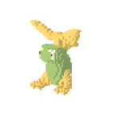
풀빛 새싹콩
pet-0 · 1단계씨앗 정령 × 잎맥
갈라진 뿌리 다리·잎 부채 머리 / 햇빛을 모으는 넓은 잎 기관
호기심 많은 · 초원에 살며 햇빛을 모으는 넓은 잎 기관으로 환경에 적응한다. 풀빛의 형태를 기관의 구조로 표현한다.
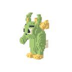
풀빛 달토리
pet-1 · 1단계뛰는 초식수 × 잎맥
기울어진 긴 귀·큰 뒷발 / 햇빛을 모으는 넓은 잎 기관
겁 많지만 재빠른 · 초원에 살며 햇빛을 모으는 넓은 잎 기관으로 환경에 적응한다. 풀빛의 형태를 기관의 구조로 표현한다.
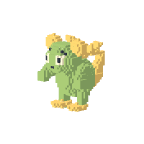
풀빛 별꼬리
pet-2 · 1단계저장쥐 × 잎맥
넓은 볼·말린 굵은 꼬리 / 햇빛을 모으는 넓은 잎 기관
부지런한 · 초원에 살며 햇빛을 모으는 넓은 잎 기관으로 환경에 적응한다. 풀빛의 형태를 기관의 구조로 표현한다.

풀빛 여우콩
pet-3 · 1단계꼬리 맹수 × 잎맥
쐐기 머리·몸보다 큰 꼬리 부채 / 햇빛을 모으는 넓은 잎 기관
영리하고 짓궂은 · 초원에 살며 햇빛을 모으는 넓은 잎 기관으로 환경에 적응한다. 풀빛의 형태를 기관의 구조로 표현한다.
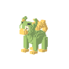
풀빛 고양콩
pet-4 · 1단계지붕을 걷는 맹수 × 잎맥
삼각 귀·고리처럼 말린 꼬리 / 햇빛을 모으는 넓은 잎 기관
도도하고 호기심 많은 · 초원에 살며 햇빛을 모으는 넓은 잎 기관으로 환경에 적응한다. 풀빛의 형태를 기관의 구조로 표현한다.
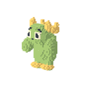
풀빛 곰구리
pet-5 · 1단계수호 곰 × 잎맥
작은 귀·큰 앞발과 좁은 어깨 / 햇빛을 모으는 넓은 잎 기관
무뚝뚝하지만 다정한 · 초원에 살며 햇빛을 모으는 넓은 잎 기관으로 환경에 적응한다. 풀빛의 형태를 기관의 구조로 표현한다.
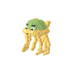
풀빛 물방울
pet-6 · 1단계막종 해파리 × 잎맥
종 모양 갓·가는 긴 촉수 / 햇빛을 모으는 넓은 잎 기관
몽환적인 · 초원에 살며 햇빛을 모으는 넓은 잎 기관으로 환경에 적응한다. 풀빛의 형태를 기관의 구조로 표현한다.
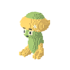
풀빛 버섯몽
pet-7 · 1단계균사 정령 × 잎맥
비대칭처럼 보이는 대칭 이중 갓·뿌리 발 / 햇빛을 모으는 넓은 잎 기관
은둔하는 · 초원에 살며 햇빛을 모으는 넓은 잎 기관으로 환경에 적응한다. 풀빛의 형태를 기관의 구조로 표현한다.
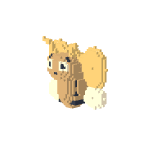
풀빛 꿀벌콩
pet-8 · 1단계수집 곤충 × 잎맥
분절된 배·작은 네 날개 / 햇빛을 모으는 넓은 잎 기관
부지런하고 다급한 · 초원에 살며 햇빛을 모으는 넓은 잎 기관으로 환경에 적응한다. 풀빛의 형태를 기관의 구조로 표현한다.
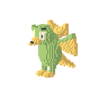
풀빛 아기새
pet-9 · 1단계작은 조류 × 잎맥
쐐기 부리·부채 꼬리 / 햇빛을 모으는 넓은 잎 기관
수다스럽고 경계심 많은 · 초원에 살며 햇빛을 모으는 넓은 잎 기관으로 환경에 적응한다. 풀빛의 형태를 기관의 구조로 표현한다.
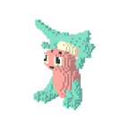
이슬 새싹콩
pet-10 · 3단계씨앗 정령 × 산호
갈라진 뿌리 다리·잎 부채 머리 / 물살을 거르는 가지형 아가미
호기심 많은 · 산호 바다에 살며 물살을 거르는 가지형 아가미으로 환경에 적응한다. 이슬의 형태를 기관의 구조로 표현한다.
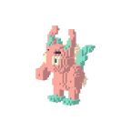
이슬 달토리
pet-11 · 3단계뛰는 초식수 × 산호
기울어진 긴 귀·큰 뒷발 / 물살을 거르는 가지형 아가미
겁 많지만 재빠른 · 산호 바다에 살며 물살을 거르는 가지형 아가미으로 환경에 적응한다. 이슬의 형태를 기관의 구조로 표현한다.
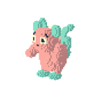
이슬 별꼬리
pet-12 · 3단계저장쥐 × 산호
넓은 볼·말린 굵은 꼬리 / 물살을 거르는 가지형 아가미
부지런한 · 산호 바다에 살며 물살을 거르는 가지형 아가미으로 환경에 적응한다. 이슬의 형태를 기관의 구조로 표현한다.
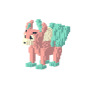
이슬 여우콩
pet-13 · 3단계꼬리 맹수 × 산호
쐐기 머리·몸보다 큰 꼬리 부채 / 물살을 거르는 가지형 아가미
영리하고 짓궂은 · 산호 바다에 살며 물살을 거르는 가지형 아가미으로 환경에 적응한다. 이슬의 형태를 기관의 구조로 표현한다.

이슬 고양콩
pet-14 · 3단계지붕을 걷는 맹수 × 산호
삼각 귀·고리처럼 말린 꼬리 / 물살을 거르는 가지형 아가미
도도하고 호기심 많은 · 산호 바다에 살며 물살을 거르는 가지형 아가미으로 환경에 적응한다. 이슬의 형태를 기관의 구조로 표현한다.
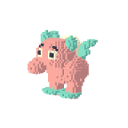
이슬 곰구리
pet-15 · 3단계수호 곰 × 산호
작은 귀·큰 앞발과 좁은 어깨 / 물살을 거르는 가지형 아가미
무뚝뚝하지만 다정한 · 산호 바다에 살며 물살을 거르는 가지형 아가미으로 환경에 적응한다. 이슬의 형태를 기관의 구조로 표현한다.
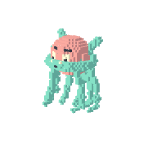
이슬 물방울
pet-16 · 3단계막종 해파리 × 산호
종 모양 갓·가는 긴 촉수 / 물살을 거르는 가지형 아가미
몽환적인 · 산호 바다에 살며 물살을 거르는 가지형 아가미으로 환경에 적응한다. 이슬의 형태를 기관의 구조로 표현한다.
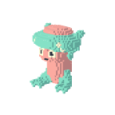
이슬 버섯몽
pet-17 · 3단계균사 정령 × 산호
비대칭처럼 보이는 대칭 이중 갓·뿌리 발 / 물살을 거르는 가지형 아가미
은둔하는 · 산호 바다에 살며 물살을 거르는 가지형 아가미으로 환경에 적응한다. 이슬의 형태를 기관의 구조로 표현한다.
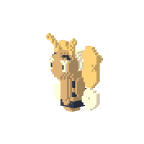
이슬 꿀벌콩
pet-18 · 3단계수집 곤충 × 산호
분절된 배·작은 네 날개 / 물살을 거르는 가지형 아가미
부지런하고 다급한 · 산호 바다에 살며 물살을 거르는 가지형 아가미으로 환경에 적응한다. 이슬의 형태를 기관의 구조로 표현한다.
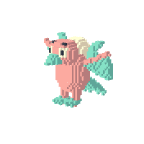
이슬 아기새
pet-19 · 3단계작은 조류 × 산호
쐐기 부리·부채 꼬리 / 물살을 거르는 가지형 아가미
수다스럽고 경계심 많은 · 산호 바다에 살며 물살을 거르는 가지형 아가미으로 환경에 적응한다. 이슬의 형태를 기관의 구조로 표현한다.
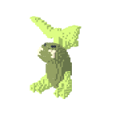
버섯 새싹콩
pet-20 · 16단계씨앗 정령 × 유리 이끼
갈라진 뿌리 다리·잎 부채 머리 / 독을 걸러내는 뿌리형 여과기관
호기심 많은 · 폐허에 살며 독을 걸러내는 뿌리형 여과기관으로 환경에 적응한다. 버섯의 형태를 기관의 구조로 표현한다.
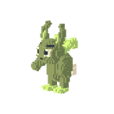
버섯 달토리
pet-21 · 16단계뛰는 초식수 × 유리 이끼
기울어진 긴 귀·큰 뒷발 / 독을 걸러내는 뿌리형 여과기관
겁 많지만 재빠른 · 폐허에 살며 독을 걸러내는 뿌리형 여과기관으로 환경에 적응한다. 버섯의 형태를 기관의 구조로 표현한다.
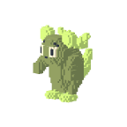
버섯 별꼬리
pet-22 · 16단계저장쥐 × 유리 이끼
넓은 볼·말린 굵은 꼬리 / 독을 걸러내는 뿌리형 여과기관
부지런한 · 폐허에 살며 독을 걸러내는 뿌리형 여과기관으로 환경에 적응한다. 버섯의 형태를 기관의 구조로 표현한다.
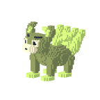
버섯 여우콩
pet-23 · 16단계꼬리 맹수 × 유리 이끼
쐐기 머리·몸보다 큰 꼬리 부채 / 독을 걸러내는 뿌리형 여과기관
영리하고 짓궂은 · 폐허에 살며 독을 걸러내는 뿌리형 여과기관으로 환경에 적응한다. 버섯의 형태를 기관의 구조로 표현한다.
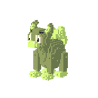
버섯 고양콩
pet-24 · 16단계지붕을 걷는 맹수 × 유리 이끼
삼각 귀·고리처럼 말린 꼬리 / 독을 걸러내는 뿌리형 여과기관
도도하고 호기심 많은 · 폐허에 살며 독을 걸러내는 뿌리형 여과기관으로 환경에 적응한다. 버섯의 형태를 기관의 구조로 표현한다.
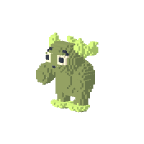
버섯 곰구리
pet-25 · 16단계수호 곰 × 유리 이끼
작은 귀·큰 앞발과 좁은 어깨 / 독을 걸러내는 뿌리형 여과기관
무뚝뚝하지만 다정한 · 폐허에 살며 독을 걸러내는 뿌리형 여과기관으로 환경에 적응한다. 버섯의 형태를 기관의 구조로 표현한다.
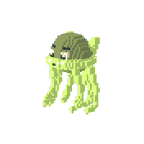
버섯 물방울
pet-26 · 16단계막종 해파리 × 유리 이끼
종 모양 갓·가는 긴 촉수 / 독을 걸러내는 뿌리형 여과기관
몽환적인 · 폐허에 살며 독을 걸러내는 뿌리형 여과기관으로 환경에 적응한다. 버섯의 형태를 기관의 구조로 표현한다.
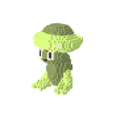
버섯 버섯몽
pet-27 · 16단계균사 정령 × 유리 이끼
비대칭처럼 보이는 대칭 이중 갓·뿌리 발 / 독을 걸러내는 뿌리형 여과기관
은둔하는 · 폐허에 살며 독을 걸러내는 뿌리형 여과기관으로 환경에 적응한다. 버섯의 형태를 기관의 구조로 표현한다.
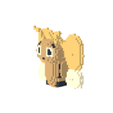
버섯 꿀벌콩
pet-28 · 16단계수집 곤충 × 유리 이끼
분절된 배·작은 네 날개 / 독을 걸러내는 뿌리형 여과기관
부지런하고 다급한 · 폐허에 살며 독을 걸러내는 뿌리형 여과기관으로 환경에 적응한다. 버섯의 형태를 기관의 구조로 표현한다.
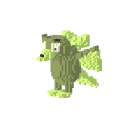
버섯 아기새
pet-29 · 16단계작은 조류 × 유리 이끼
쐐기 부리·부채 꼬리 / 독을 걸러내는 뿌리형 여과기관
수다스럽고 경계심 많은 · 폐허에 살며 독을 걸러내는 뿌리형 여과기관으로 환경에 적응한다. 버섯의 형태를 기관의 구조로 표현한다.
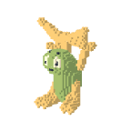
포자 새싹콩
pet-30 · 17단계씨앗 정령 × 잎 껍질
갈라진 뿌리 다리·잎 부채 머리 / 이슬을 모으는 갈라진 더듬이
호기심 많은 · 소인국에 살며 이슬을 모으는 갈라진 더듬이으로 환경에 적응한다. 포자의 형태를 기관의 구조로 표현한다.
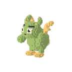
포자 달토리
pet-31 · 17단계뛰는 초식수 × 잎 껍질
기울어진 긴 귀·큰 뒷발 / 이슬을 모으는 갈라진 더듬이
겁 많지만 재빠른 · 소인국에 살며 이슬을 모으는 갈라진 더듬이으로 환경에 적응한다. 포자의 형태를 기관의 구조로 표현한다.
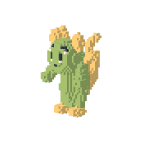
포자 별꼬리
pet-32 · 17단계저장쥐 × 잎 껍질
넓은 볼·말린 굵은 꼬리 / 이슬을 모으는 갈라진 더듬이
부지런한 · 소인국에 살며 이슬을 모으는 갈라진 더듬이으로 환경에 적응한다. 포자의 형태를 기관의 구조로 표현한다.
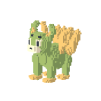
포자 여우콩
pet-33 · 17단계꼬리 맹수 × 잎 껍질
쐐기 머리·몸보다 큰 꼬리 부채 / 이슬을 모으는 갈라진 더듬이
영리하고 짓궂은 · 소인국에 살며 이슬을 모으는 갈라진 더듬이으로 환경에 적응한다. 포자의 형태를 기관의 구조로 표현한다.
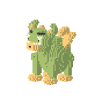
포자 고양콩
pet-34 · 17단계지붕을 걷는 맹수 × 잎 껍질
삼각 귀·고리처럼 말린 꼬리 / 이슬을 모으는 갈라진 더듬이
도도하고 호기심 많은 · 소인국에 살며 이슬을 모으는 갈라진 더듬이으로 환경에 적응한다. 포자의 형태를 기관의 구조로 표현한다.
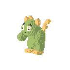
포자 곰구리
pet-35 · 17단계수호 곰 × 잎 껍질
작은 귀·큰 앞발과 좁은 어깨 / 이슬을 모으는 갈라진 더듬이
무뚝뚝하지만 다정한 · 소인국에 살며 이슬을 모으는 갈라진 더듬이으로 환경에 적응한다. 포자의 형태를 기관의 구조로 표현한다.
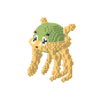
포자 물방울
pet-36 · 17단계막종 해파리 × 잎 껍질
종 모양 갓·가는 긴 촉수 / 이슬을 모으는 갈라진 더듬이
몽환적인 · 소인국에 살며 이슬을 모으는 갈라진 더듬이으로 환경에 적응한다. 포자의 형태를 기관의 구조로 표현한다.
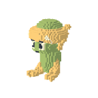
포자 버섯몽
pet-37 · 17단계균사 정령 × 잎 껍질
비대칭처럼 보이는 대칭 이중 갓·뿌리 발 / 이슬을 모으는 갈라진 더듬이
은둔하는 · 소인국에 살며 이슬을 모으는 갈라진 더듬이으로 환경에 적응한다. 포자의 형태를 기관의 구조로 표현한다.
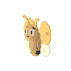
포자 꿀벌콩
pet-38 · 17단계수집 곤충 × 잎 껍질
분절된 배·작은 네 날개 / 이슬을 모으는 갈라진 더듬이
부지런하고 다급한 · 소인국에 살며 이슬을 모으는 갈라진 더듬이으로 환경에 적응한다. 포자의 형태를 기관의 구조로 표현한다.
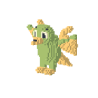
포자 아기새
pet-39 · 17단계작은 조류 × 잎 껍질
쐐기 부리·부채 꼬리 / 이슬을 모으는 갈라진 더듬이
수다스럽고 경계심 많은 · 소인국에 살며 이슬을 모으는 갈라진 더듬이으로 환경에 적응한다. 포자의 형태를 기관의 구조로 표현한다.
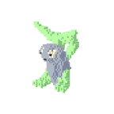
수정 새싹콩
pet-40 · 12단계씨앗 정령 × 반투명 막
갈라진 뿌리 다리·잎 부채 머리 / 중력을 느끼는 넓은 감각막
호기심 많은 · 외계 습지에 살며 중력을 느끼는 넓은 감각막으로 환경에 적응한다. 수정의 형태를 기관의 구조로 표현한다.
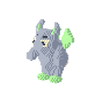
수정 달토리
pet-41 · 12단계뛰는 초식수 × 반투명 막
기울어진 긴 귀·큰 뒷발 / 중력을 느끼는 넓은 감각막
겁 많지만 재빠른 · 외계 습지에 살며 중력을 느끼는 넓은 감각막으로 환경에 적응한다. 수정의 형태를 기관의 구조로 표현한다.
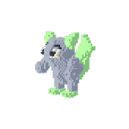
수정 별꼬리
pet-42 · 12단계저장쥐 × 반투명 막
넓은 볼·말린 굵은 꼬리 / 중력을 느끼는 넓은 감각막
부지런한 · 외계 습지에 살며 중력을 느끼는 넓은 감각막으로 환경에 적응한다. 수정의 형태를 기관의 구조로 표현한다.
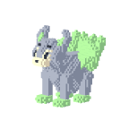
수정 여우콩
pet-43 · 12단계꼬리 맹수 × 반투명 막
쐐기 머리·몸보다 큰 꼬리 부채 / 중력을 느끼는 넓은 감각막
영리하고 짓궂은 · 외계 습지에 살며 중력을 느끼는 넓은 감각막으로 환경에 적응한다. 수정의 형태를 기관의 구조로 표현한다.
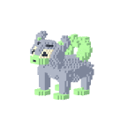
수정 고양콩
pet-44 · 12단계지붕을 걷는 맹수 × 반투명 막
삼각 귀·고리처럼 말린 꼬리 / 중력을 느끼는 넓은 감각막
도도하고 호기심 많은 · 외계 습지에 살며 중력을 느끼는 넓은 감각막으로 환경에 적응한다. 수정의 형태를 기관의 구조로 표현한다.
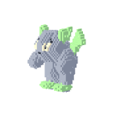
수정 곰구리
pet-45 · 12단계수호 곰 × 반투명 막
작은 귀·큰 앞발과 좁은 어깨 / 중력을 느끼는 넓은 감각막
무뚝뚝하지만 다정한 · 외계 습지에 살며 중력을 느끼는 넓은 감각막으로 환경에 적응한다. 수정의 형태를 기관의 구조로 표현한다.
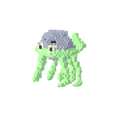
수정 물방울
pet-46 · 12단계막종 해파리 × 반투명 막
종 모양 갓·가는 긴 촉수 / 중력을 느끼는 넓은 감각막
몽환적인 · 외계 습지에 살며 중력을 느끼는 넓은 감각막으로 환경에 적응한다. 수정의 형태를 기관의 구조로 표현한다.
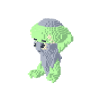
수정 버섯몽
pet-47 · 12단계균사 정령 × 반투명 막
비대칭처럼 보이는 대칭 이중 갓·뿌리 발 / 중력을 느끼는 넓은 감각막
은둔하는 · 외계 습지에 살며 중력을 느끼는 넓은 감각막으로 환경에 적응한다. 수정의 형태를 기관의 구조로 표현한다.
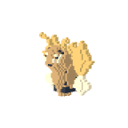
수정 꿀벌콩
pet-48 · 12단계수집 곤충 × 반투명 막
분절된 배·작은 네 날개 / 중력을 느끼는 넓은 감각막
부지런하고 다급한 · 외계 습지에 살며 중력을 느끼는 넓은 감각막으로 환경에 적응한다. 수정의 형태를 기관의 구조로 표현한다.
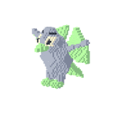
수정 아기새
pet-49 · 12단계작은 조류 × 반투명 막
쐐기 부리·부채 꼬리 / 중력을 느끼는 넓은 감각막
수다스럽고 경계심 많은 · 외계 습지에 살며 중력을 느끼는 넓은 감각막으로 환경에 적응한다. 수정의 형태를 기관의 구조로 표현한다.
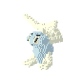
서리 새싹콩
pet-50 · 14단계씨앗 정령 × 얼음
갈라진 뿌리 다리·잎 부채 머리 / 열손실을 막는 넓은 결정 깃
호기심 많은 · 빙하에 살며 열손실을 막는 넓은 결정 깃으로 환경에 적응한다. 서리의 형태를 기관의 구조로 표현한다.
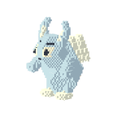
서리 달토리
pet-51 · 14단계뛰는 초식수 × 얼음
기울어진 긴 귀·큰 뒷발 / 열손실을 막는 넓은 결정 깃
겁 많지만 재빠른 · 빙하에 살며 열손실을 막는 넓은 결정 깃으로 환경에 적응한다. 서리의 형태를 기관의 구조로 표현한다.
서리 별꼬리
pet-52 · 14단계저장쥐 × 얼음
넓은 볼·말린 굵은 꼬리 / 열손실을 막는 넓은 결정 깃
부지런한 · 빙하에 살며 열손실을 막는 넓은 결정 깃으로 환경에 적응한다. 서리의 형태를 기관의 구조로 표현한다.

서리 여우콩
pet-53 · 14단계꼬리 맹수 × 얼음
쐐기 머리·몸보다 큰 꼬리 부채 / 열손실을 막는 넓은 결정 깃
영리하고 짓궂은 · 빙하에 살며 열손실을 막는 넓은 결정 깃으로 환경에 적응한다. 서리의 형태를 기관의 구조로 표현한다.
서리 고양콩
pet-54 · 14단계지붕을 걷는 맹수 × 얼음
삼각 귀·고리처럼 말린 꼬리 / 열손실을 막는 넓은 결정 깃
도도하고 호기심 많은 · 빙하에 살며 열손실을 막는 넓은 결정 깃으로 환경에 적응한다. 서리의 형태를 기관의 구조로 표현한다.
서리 곰구리
pet-55 · 14단계수호 곰 × 얼음
작은 귀·큰 앞발과 좁은 어깨 / 열손실을 막는 넓은 결정 깃
무뚝뚝하지만 다정한 · 빙하에 살며 열손실을 막는 넓은 결정 깃으로 환경에 적응한다. 서리의 형태를 기관의 구조로 표현한다.
서리 물방울
pet-56 · 14단계막종 해파리 × 얼음
종 모양 갓·가는 긴 촉수 / 열손실을 막는 넓은 결정 깃
몽환적인 · 빙하에 살며 열손실을 막는 넓은 결정 깃으로 환경에 적응한다. 서리의 형태를 기관의 구조로 표현한다.
서리 버섯몽
pet-57 · 14단계균사 정령 × 얼음
비대칭처럼 보이는 대칭 이중 갓·뿌리 발 / 열손실을 막는 넓은 결정 깃
은둔하는 · 빙하에 살며 열손실을 막는 넓은 결정 깃으로 환경에 적응한다. 서리의 형태를 기관의 구조로 표현한다.
서리 꿀벌콩
pet-58 · 14단계수집 곤충 × 얼음
분절된 배·작은 네 날개 / 열손실을 막는 넓은 결정 깃
부지런하고 다급한 · 빙하에 살며 열손실을 막는 넓은 결정 깃으로 환경에 적응한다. 서리의 형태를 기관의 구조로 표현한다.
서리 아기새
pet-59 · 14단계작은 조류 × 얼음
쐐기 부리·부채 꼬리 / 열손실을 막는 넓은 결정 깃
수다스럽고 경계심 많은 · 빙하에 살며 열손실을 막는 넓은 결정 깃으로 환경에 적응한다. 서리의 형태를 기관의 구조로 표현한다.
구름 새싹콩
pet-60 · 11단계씨앗 정령 × 구름 대리석
갈라진 뿌리 다리·잎 부채 머리 / 바람을 받는 층진 날개 기관
호기심 많은 · 신전에 살며 바람을 받는 층진 날개 기관으로 환경에 적응한다. 구름의 형태를 기관의 구조로 표현한다.
구름 달토리
pet-61 · 11단계뛰는 초식수 × 구름 대리석
기울어진 긴 귀·큰 뒷발 / 바람을 받는 층진 날개 기관
겁 많지만 재빠른 · 신전에 살며 바람을 받는 층진 날개 기관으로 환경에 적응한다. 구름의 형태를 기관의 구조로 표현한다.
구름 별꼬리
pet-62 · 11단계저장쥐 × 구름 대리석
넓은 볼·말린 굵은 꼬리 / 바람을 받는 층진 날개 기관
부지런한 · 신전에 살며 바람을 받는 층진 날개 기관으로 환경에 적응한다. 구름의 형태를 기관의 구조로 표현한다.
구름 여우콩
pet-63 · 11단계꼬리 맹수 × 구름 대리석
쐐기 머리·몸보다 큰 꼬리 부채 / 바람을 받는 층진 날개 기관
영리하고 짓궂은 · 신전에 살며 바람을 받는 층진 날개 기관으로 환경에 적응한다. 구름의 형태를 기관의 구조로 표현한다.

구름 고양콩
pet-64 · 11단계지붕을 걷는 맹수 × 구름 대리석
삼각 귀·고리처럼 말린 꼬리 / 바람을 받는 층진 날개 기관
도도하고 호기심 많은 · 신전에 살며 바람을 받는 층진 날개 기관으로 환경에 적응한다. 구름의 형태를 기관의 구조로 표현한다.
구름 곰구리
pet-65 · 11단계수호 곰 × 구름 대리석
작은 귀·큰 앞발과 좁은 어깨 / 바람을 받는 층진 날개 기관
무뚝뚝하지만 다정한 · 신전에 살며 바람을 받는 층진 날개 기관으로 환경에 적응한다. 구름의 형태를 기관의 구조로 표현한다.
구름 물방울
pet-66 · 11단계막종 해파리 × 구름 대리석
종 모양 갓·가는 긴 촉수 / 바람을 받는 층진 날개 기관
몽환적인 · 신전에 살며 바람을 받는 층진 날개 기관으로 환경에 적응한다. 구름의 형태를 기관의 구조로 표현한다.
구름 버섯몽
pet-67 · 11단계균사 정령 × 구름 대리석
비대칭처럼 보이는 대칭 이중 갓·뿌리 발 / 바람을 받는 층진 날개 기관
은둔하는 · 신전에 살며 바람을 받는 층진 날개 기관으로 환경에 적응한다. 구름의 형태를 기관의 구조로 표현한다.
구름 꿀벌콩
pet-68 · 11단계수집 곤충 × 구름 대리석
분절된 배·작은 네 날개 / 바람을 받는 층진 날개 기관
부지런하고 다급한 · 신전에 살며 바람을 받는 층진 날개 기관으로 환경에 적응한다. 구름의 형태를 기관의 구조로 표현한다.
구름 아기새
pet-69 · 11단계작은 조류 × 구름 대리석
쐐기 부리·부채 꼬리 / 바람을 받는 층진 날개 기관
수다스럽고 경계심 많은 · 신전에 살며 바람을 받는 층진 날개 기관으로 환경에 적응한다. 구름의 형태를 기관의 구조로 표현한다.
황금 새싹콩
pet-70 · 8단계씨앗 정령 × 사암
갈라진 뿌리 다리·잎 부채 머리 / 물과 열을 저장하는 둥근 저장실
호기심 많은 · 사막에 살며 물과 열을 저장하는 둥근 저장실으로 환경에 적응한다. 황금의 형태를 기관의 구조로 표현한다.
황금 달토리
pet-71 · 8단계뛰는 초식수 × 사암
기울어진 긴 귀·큰 뒷발 / 물과 열을 저장하는 둥근 저장실
겁 많지만 재빠른 · 사막에 살며 물과 열을 저장하는 둥근 저장실으로 환경에 적응한다. 황금의 형태를 기관의 구조로 표현한다.
황금 별꼬리
pet-72 · 8단계저장쥐 × 사암
넓은 볼·말린 굵은 꼬리 / 물과 열을 저장하는 둥근 저장실
부지런한 · 사막에 살며 물과 열을 저장하는 둥근 저장실으로 환경에 적응한다. 황금의 형태를 기관의 구조로 표현한다.
황금 여우콩
pet-73 · 8단계꼬리 맹수 × 사암
쐐기 머리·몸보다 큰 꼬리 부채 / 물과 열을 저장하는 둥근 저장실
영리하고 짓궂은 · 사막에 살며 물과 열을 저장하는 둥근 저장실으로 환경에 적응한다. 황금의 형태를 기관의 구조로 표현한다.

황금 고양콩
pet-74 · 8단계지붕을 걷는 맹수 × 사암
삼각 귀·고리처럼 말린 꼬리 / 물과 열을 저장하는 둥근 저장실
도도하고 호기심 많은 · 사막에 살며 물과 열을 저장하는 둥근 저장실으로 환경에 적응한다. 황금의 형태를 기관의 구조로 표현한다.
황금 곰구리
pet-75 · 8단계수호 곰 × 사암
작은 귀·큰 앞발과 좁은 어깨 / 물과 열을 저장하는 둥근 저장실
무뚝뚝하지만 다정한 · 사막에 살며 물과 열을 저장하는 둥근 저장실으로 환경에 적응한다. 황금의 형태를 기관의 구조로 표현한다.
황금 물방울
pet-76 · 8단계막종 해파리 × 사암
종 모양 갓·가는 긴 촉수 / 물과 열을 저장하는 둥근 저장실
몽환적인 · 사막에 살며 물과 열을 저장하는 둥근 저장실으로 환경에 적응한다. 황금의 형태를 기관의 구조로 표현한다.
황금 버섯몽
pet-77 · 8단계균사 정령 × 사암
비대칭처럼 보이는 대칭 이중 갓·뿌리 발 / 물과 열을 저장하는 둥근 저장실
은둔하는 · 사막에 살며 물과 열을 저장하는 둥근 저장실으로 환경에 적응한다. 황금의 형태를 기관의 구조로 표현한다.
황금 꿀벌콩
pet-78 · 8단계수집 곤충 × 사암
분절된 배·작은 네 날개 / 물과 열을 저장하는 둥근 저장실
부지런하고 다급한 · 사막에 살며 물과 열을 저장하는 둥근 저장실으로 환경에 적응한다. 황금의 형태를 기관의 구조로 표현한다.
황금 아기새
pet-79 · 8단계작은 조류 × 사암
쐐기 부리·부채 꼬리 / 물과 열을 저장하는 둥근 저장실
수다스럽고 경계심 많은 · 사막에 살며 물과 열을 저장하는 둥근 저장실으로 환경에 적응한다. 황금의 형태를 기관의 구조로 표현한다.
은하 새싹콩
pet-80 · 19단계씨앗 정령 × 별 유리
갈라진 뿌리 다리·잎 부채 머리 / 궤도를 감지하는 아치형 감각기관
호기심 많은 · 천문대에 살며 궤도를 감지하는 아치형 감각기관으로 환경에 적응한다. 은하의 형태를 기관의 구조로 표현한다.
은하 달토리
pet-81 · 19단계뛰는 초식수 × 별 유리
기울어진 긴 귀·큰 뒷발 / 궤도를 감지하는 아치형 감각기관
겁 많지만 재빠른 · 천문대에 살며 궤도를 감지하는 아치형 감각기관으로 환경에 적응한다. 은하의 형태를 기관의 구조로 표현한다.
은하 별꼬리
pet-82 · 19단계저장쥐 × 별 유리
넓은 볼·말린 굵은 꼬리 / 궤도를 감지하는 아치형 감각기관
부지런한 · 천문대에 살며 궤도를 감지하는 아치형 감각기관으로 환경에 적응한다. 은하의 형태를 기관의 구조로 표현한다.
은하 여우콩
pet-83 · 19단계꼬리 맹수 × 별 유리
쐐기 머리·몸보다 큰 꼬리 부채 / 궤도를 감지하는 아치형 감각기관
영리하고 짓궂은 · 천문대에 살며 궤도를 감지하는 아치형 감각기관으로 환경에 적응한다. 은하의 형태를 기관의 구조로 표현한다.
은하 고양콩
pet-84 · 19단계지붕을 걷는 맹수 × 별 유리
삼각 귀·고리처럼 말린 꼬리 / 궤도를 감지하는 아치형 감각기관
도도하고 호기심 많은 · 천문대에 살며 궤도를 감지하는 아치형 감각기관으로 환경에 적응한다. 은하의 형태를 기관의 구조로 표현한다.
은하 곰구리
pet-85 · 19단계수호 곰 × 별 유리
작은 귀·큰 앞발과 좁은 어깨 / 궤도를 감지하는 아치형 감각기관
무뚝뚝하지만 다정한 · 천문대에 살며 궤도를 감지하는 아치형 감각기관으로 환경에 적응한다. 은하의 형태를 기관의 구조로 표현한다.
은하 물방울
pet-86 · 19단계막종 해파리 × 별 유리
종 모양 갓·가는 긴 촉수 / 궤도를 감지하는 아치형 감각기관
몽환적인 · 천문대에 살며 궤도를 감지하는 아치형 감각기관으로 환경에 적응한다. 은하의 형태를 기관의 구조로 표현한다.
은하 버섯몽
pet-87 · 19단계균사 정령 × 별 유리
비대칭처럼 보이는 대칭 이중 갓·뿌리 발 / 궤도를 감지하는 아치형 감각기관
은둔하는 · 천문대에 살며 궤도를 감지하는 아치형 감각기관으로 환경에 적응한다. 은하의 형태를 기관의 구조로 표현한다.
은하 꿀벌콩
pet-88 · 19단계수집 곤충 × 별 유리
분절된 배·작은 네 날개 / 궤도를 감지하는 아치형 감각기관
부지런하고 다급한 · 천문대에 살며 궤도를 감지하는 아치형 감각기관으로 환경에 적응한다. 은하의 형태를 기관의 구조로 표현한다.
은하 아기새
pet-89 · 19단계작은 조류 × 별 유리
쐐기 부리·부채 꼬리 / 궤도를 감지하는 아치형 감각기관
수다스럽고 경계심 많은 · 천문대에 살며 궤도를 감지하는 아치형 감각기관으로 환경에 적응한다. 은하의 형태를 기관의 구조로 표현한다.
태초 새싹콩
pet-90 · 20단계씨앗 정령 × 흑요석과 씨앗
갈라진 뿌리 다리·잎 부채 머리 / 빛을 품는 열린 문틀형 골격
호기심 많은 · 공허 정원에 살며 빛을 품는 열린 문틀형 골격으로 환경에 적응한다. 태초의 형태를 기관의 구조로 표현한다.
태초 달토리
pet-91 · 20단계뛰는 초식수 × 흑요석과 씨앗
기울어진 긴 귀·큰 뒷발 / 빛을 품는 열린 문틀형 골격
겁 많지만 재빠른 · 공허 정원에 살며 빛을 품는 열린 문틀형 골격으로 환경에 적응한다. 태초의 형태를 기관의 구조로 표현한다.
태초 별꼬리
pet-92 · 20단계저장쥐 × 흑요석과 씨앗
넓은 볼·말린 굵은 꼬리 / 빛을 품는 열린 문틀형 골격
부지런한 · 공허 정원에 살며 빛을 품는 열린 문틀형 골격으로 환경에 적응한다. 태초의 형태를 기관의 구조로 표현한다.
태초 여우콩
pet-93 · 20단계꼬리 맹수 × 흑요석과 씨앗
쐐기 머리·몸보다 큰 꼬리 부채 / 빛을 품는 열린 문틀형 골격
영리하고 짓궂은 · 공허 정원에 살며 빛을 품는 열린 문틀형 골격으로 환경에 적응한다. 태초의 형태를 기관의 구조로 표현한다.
태초 고양콩
pet-94 · 20단계지붕을 걷는 맹수 × 흑요석과 씨앗
삼각 귀·고리처럼 말린 꼬리 / 빛을 품는 열린 문틀형 골격
도도하고 호기심 많은 · 공허 정원에 살며 빛을 품는 열린 문틀형 골격으로 환경에 적응한다. 태초의 형태를 기관의 구조로 표현한다.
태초 곰구리
pet-95 · 20단계수호 곰 × 흑요석과 씨앗
작은 귀·큰 앞발과 좁은 어깨 / 빛을 품는 열린 문틀형 골격
무뚝뚝하지만 다정한 · 공허 정원에 살며 빛을 품는 열린 문틀형 골격으로 환경에 적응한다. 태초의 형태를 기관의 구조로 표현한다.
태초 물방울
pet-96 · 20단계막종 해파리 × 흑요석과 씨앗
종 모양 갓·가는 긴 촉수 / 빛을 품는 열린 문틀형 골격
몽환적인 · 공허 정원에 살며 빛을 품는 열린 문틀형 골격으로 환경에 적응한다. 태초의 형태를 기관의 구조로 표현한다.
태초 버섯몽
pet-97 · 20단계균사 정령 × 흑요석과 씨앗
비대칭처럼 보이는 대칭 이중 갓·뿌리 발 / 빛을 품는 열린 문틀형 골격
은둔하는 · 공허 정원에 살며 빛을 품는 열린 문틀형 골격으로 환경에 적응한다. 태초의 형태를 기관의 구조로 표현한다.
태초 꿀벌콩
pet-98 · 20단계수집 곤충 × 흑요석과 씨앗
분절된 배·작은 네 날개 / 빛을 품는 열린 문틀형 골격
부지런하고 다급한 · 공허 정원에 살며 빛을 품는 열린 문틀형 골격으로 환경에 적응한다. 태초의 형태를 기관의 구조로 표현한다.
태초 아기새
pet-99 · 20단계작은 조류 × 흑요석과 씨앗
쐐기 부리·부채 꼬리 / 빛을 품는 열린 문틀형 골격
수다스럽고 경계심 많은 · 공허 정원에 살며 빛을 품는 열린 문틀형 골격으로 환경에 적응한다. 태초의 형태를 기관의 구조로 표현한다.
새순 뽀미
pet-100 · 1단계씨앗 정령 × 잎맥
갈라진 뿌리 다리·잎 부채 머리 / 햇빛을 모으는 넓은 잎 기관
호기심 많은 · 초원에 살며 햇빛을 모으는 넓은 잎 기관으로 환경에 적응한다. 새순의 형태를 기관의 구조로 표현한다.
클로버 토토
pet-101 · 1단계뛰는 초식수 × 잎맥
기울어진 긴 귀·큰 뒷발 / 햇빛을 모으는 넓은 잎 기관
겁 많지만 재빠른 · 초원에 살며 햇빛을 모으는 넓은 잎 기관으로 환경에 적응한다. 클로버의 형태를 기관의 구조로 표현한다.
민들레 삐삐
pet-102 · 1단계작은 조류 × 잎맥
쐐기 부리·부채 꼬리 / 햇빛을 모으는 넓은 잎 기관
수다스럽고 경계심 많은 · 초원에 살며 햇빛을 모으는 넓은 잎 기관으로 환경에 적응한다. 민들레의 형태를 기관의 구조로 표현한다.
딸기 볼쥐
pet-103 · 1단계저장쥐 × 잎맥
넓은 볼·말린 굵은 꼬리 / 햇빛을 모으는 넓은 잎 기관
부지런한 · 초원에 살며 햇빛을 모으는 넓은 잎 기관으로 환경에 적응한다. 딸기의 형태를 기관의 구조로 표현한다.
도토리 꼬북
pet-104 · 1단계등짐 거북 × 잎맥
낮고 넓은 등·돌출된 목 / 햇빛을 모으는 넓은 잎 기관
느긋하고 듬직한 · 초원에 살며 햇빛을 모으는 넓은 잎 기관으로 환경에 적응한다. 도토리의 형태를 기관의 구조로 표현한다.
풍차 병아리
pet-105 · 1단계작은 조류 × 잎맥
쐐기 부리·부채 꼬리 / 햇빛을 모으는 넓은 잎 기관
수다스럽고 경계심 많은 · 초원에 살며 햇빛을 모으는 넓은 잎 기관으로 환경에 적응한다. 풍차의 형태를 기관의 구조로 표현한다.
꿀단지 곰곰
pet-106 · 1단계수호 곰 × 잎맥
작은 귀·큰 앞발과 좁은 어깨 / 햇빛을 모으는 넓은 잎 기관
무뚝뚝하지만 다정한 · 초원에 살며 햇빛을 모으는 넓은 잎 기관으로 환경에 적응한다. 꿀단지의 형태를 기관의 구조로 표현한다.
꽃갈기 사자
pet-107 · 1단계갈기 맹수 × 잎맥
방사형 갈기·뒤로 낮아지는 허리 / 햇빛을 모으는 넓은 잎 기관
당당한 · 초원에 살며 햇빛을 모으는 넓은 잎 기관으로 환경에 적응한다. 꽃갈기의 형태를 기관의 구조로 표현한다.
무지개 나비룡
pet-108 · 1단계나비 수호수 × 잎맥
위아래 크기가 다른 네 날개·가는 배 / 햇빛을 모으는 넓은 잎 기관
신비롭고 조심스러운 · 초원에 살며 햇빛을 모으는 넓은 잎 기관으로 환경에 적응한다. 무지개의 형태를 기관의 구조로 표현한다.
사계절 정원사슴
pet-109 · 1단계가지뿔 초식수 × 잎맥
갈라진 뿔·가늘고 높은 다리 / 햇빛을 모으는 넓은 잎 기관
예민하고 고요한 · 초원에 살며 햇빛을 모으는 넓은 잎 기관으로 환경에 적응한다. 사계절의 형태를 기관의 구조로 표현한다.
단추 삐봇
pet-110 · 2단계자율 작업수 × 접힌 나무 조립판
분리된 어깨·집게 손 / 움직임을 저장하는 커다란 태엽 지지대
정확하고 고집 센 · 장난감에 살며 움직임을 저장하는 커다란 태엽 지지대으로 환경에 적응한다. 단추의 형태를 기관의 구조로 표현한다.
블록 멍멍
pet-111 · 2단계달리는 맹수 × 접힌 나무 조립판
앞으로 나온 주둥이·짧은 늘어진 귀 / 움직임을 저장하는 커다란 태엽 지지대
충직한 · 장난감에 살며 움직임을 저장하는 커다란 태엽 지지대으로 환경에 적응한다. 블록의 형태를 기관의 구조로 표현한다.
종이비행 참새
pet-112 · 2단계작은 조류 × 접힌 나무 조립판
쐐기 부리·부채 꼬리 / 움직임을 저장하는 커다란 태엽 지지대
수다스럽고 경계심 많은 · 장난감에 살며 움직임을 저장하는 커다란 태엽 지지대으로 환경에 적응한다. 종이비행의 형태를 기관의 구조로 표현한다.
오뚝이 통통
pet-113 · 2단계떠도는 정령 × 접힌 나무 조립판
속이 빈 망토 윤곽·갈라진 밑단 / 움직임을 저장하는 커다란 태엽 지지대
엉뚱하고 낯가리는 · 장난감에 살며 움직임을 저장하는 커다란 태엽 지지대으로 환경에 적응한다. 오뚝이의 형태를 기관의 구조로 표현한다.
실타래 토끼
pet-114 · 2단계뛰는 초식수 × 접힌 나무 조립판
기울어진 긴 귀·큰 뒷발 / 움직임을 저장하는 커다란 태엽 지지대
겁 많지만 재빠른 · 장난감에 살며 움직임을 저장하는 커다란 태엽 지지대으로 환경에 적응한다. 실타래의 형태를 기관의 구조로 표현한다.
주사위 거북
pet-115 · 2단계등짐 거북 × 접힌 나무 조립판
낮고 넓은 등·돌출된 목 / 움직임을 저장하는 커다란 태엽 지지대
느긋하고 듬직한 · 장난감에 살며 움직임을 저장하는 커다란 태엽 지지대으로 환경에 적응한다. 주사위의 형태를 기관의 구조로 표현한다.
팽이 발레리나
pet-116 · 2단계떠도는 정령 × 접힌 나무 조립판
속이 빈 망토 윤곽·갈라진 밑단 / 움직임을 저장하는 커다란 태엽 지지대
엉뚱하고 낯가리는 · 장난감에 살며 움직임을 저장하는 커다란 태엽 지지대으로 환경에 적응한다. 팽이의 형태를 기관의 구조로 표현한다.
기관차 코끼리
pet-117 · 2단계짐꾼 초식수 × 접힌 나무 조립판
낮게 굽는 코·넓은 귀판 / 움직임을 저장하는 커다란 태엽 지지대
느긋한 · 장난감에 살며 움직임을 저장하는 커다란 태엽 지지대으로 환경에 적응한다. 기관차의 형태를 기관의 구조로 표현한다.
인형극 꼭두룡
pet-118 · 2단계활공 파충수 × 접힌 나무 조립판
비탈진 날개·긴 등과 꼬리 / 움직임을 저장하는 커다란 태엽 지지대
대담한 · 장난감에 살며 움직임을 저장하는 커다란 태엽 지지대으로 환경에 적응한다. 인형극의 형태를 기관의 구조로 표현한다.
왕관 태엽곰
pet-119 · 2단계수호 곰 × 접힌 나무 조립판
작은 귀·큰 앞발과 좁은 어깨 / 움직임을 저장하는 커다란 태엽 지지대
무뚝뚝하지만 다정한 · 장난감에 살며 움직임을 저장하는 커다란 태엽 지지대으로 환경에 적응한다. 왕관의 형태를 기관의 구조로 표현한다.
거품 방울어
pet-120 · 3단계부유 어류 × 산호
좁은 꼬리자루·수직 꼬리 지느러미 / 물살을 거르는 가지형 아가미
재빠르고 장난스러운 · 산호 바다에 살며 물살을 거르는 가지형 아가미으로 환경에 적응한다. 거품의 형태를 기관의 구조로 표현한다.
소라 소곤
pet-121 · 3단계나선 연체수 × 산호
커다란 나선집·낮고 긴 발 / 물살을 거르는 가지형 아가미
신중한 · 산호 바다에 살며 물살을 거르는 가지형 아가미으로 환경에 적응한다. 소라의 형태를 기관의 구조로 표현한다.
산호 집게
pet-122 · 3단계집게 갑각수 × 산호
옆으로 벌어진 집게·여섯 발 / 물살을 거르는 가지형 아가미
경계심 강한 · 산호 바다에 살며 물살을 거르는 가지형 아가미으로 환경에 적응한다. 산호의 형태를 기관의 구조로 표현한다.
해초 해마
pet-123 · 3단계직립 해룡 × 산호
수직으로 굽은 몸·고리 꼬리 / 물살을 거르는 가지형 아가미
수줍은 · 산호 바다에 살며 물살을 거르는 가지형 아가미으로 환경에 적응한다. 해초의 형태를 기관의 구조로 표현한다.
진주 조개
pet-124 · 3단계조개 수호수 × 산호
벌어진 두 패각·안쪽 진주핵 / 물살을 거르는 가지형 아가미
비밀스러운 · 산호 바다에 살며 물살을 거르는 가지형 아가미으로 환경에 적응한다. 진주의 형태를 기관의 구조로 표현한다.
줄무늬 삐에로어
pet-125 · 3단계부유 어류 × 산호
좁은 꼬리자루·수직 꼬리 지느러미 / 물살을 거르는 가지형 아가미
재빠르고 장난스러운 · 산호 바다에 살며 물살을 거르는 가지형 아가미으로 환경에 적응한다. 줄무늬의 형태를 기관의 구조로 표현한다.
파도 가오리
pet-126 · 3단계막날개 유영수 × 산호
마름모 가슴지느러미·가는 꼬리 / 물살을 거르는 가지형 아가미
여유로운 · 산호 바다에 살며 물살을 거르는 가지형 아가미으로 환경에 적응한다. 파도의 형태를 기관의 구조로 표현한다.
분홍 산호거북
pet-127 · 3단계등짐 거북 × 산호
낮고 넓은 등·돌출된 목 / 물살을 거르는 가지형 아가미
느긋하고 듬직한 · 산호 바다에 살며 물살을 거르는 가지형 아가미으로 환경에 적응한다. 분홍의 형태를 기관의 구조로 표현한다.
노을 돌고래
pet-128 · 3단계거대 유영수 × 산호
긴 유선형 등·수평 꼬리 / 물살을 거르는 가지형 아가미
평온하고 사려 깊은 · 산호 바다에 살며 물살을 거르는 가지형 아가미으로 환경에 적응한다. 노을의 형태를 기관의 구조로 표현한다.
산호궁 바다용
pet-129 · 3단계활공 파충수 × 산호
비탈진 날개·긴 등과 꼬리 / 물살을 거르는 가지형 아가미
대담한 · 산호 바다에 살며 물살을 거르는 가지형 아가미으로 환경에 적응한다. 산호궁의 형태를 기관의 구조로 표현한다.
숯덩이 두두
pet-130 · 4단계떠도는 정령 × 화산암
속이 빈 망토 윤곽·갈라진 밑단 / 열을 방출하는 벌어진 등판
엉뚱하고 낯가리는 · 화산에 살며 열을 방출하는 벌어진 등판으로 환경에 적응한다. 숯덩이의 형태를 기관의 구조로 표현한다.
불씨 도마뱀
pet-131 · 4단계낮은 파충수 × 화산암
벌어진 네 발·낮은 긴 꼬리 / 열을 방출하는 벌어진 등판
민첩한 · 화산에 살며 열을 방출하는 벌어진 등판으로 환경에 적응한다. 불씨의 형태를 기관의 구조로 표현한다.
화로 꼬북
pet-132 · 4단계등짐 거북 × 화산암
낮고 넓은 등·돌출된 목 / 열을 방출하는 벌어진 등판
느긋하고 듬직한 · 화산에 살며 열을 방출하는 벌어진 등판으로 환경에 적응한다. 화로의 형태를 기관의 구조로 표현한다.
재구름 박쥐
pet-133 · 4단계야행 활공수 × 화산암
접힌 삼각 날개·큰 귀 / 열을 방출하는 벌어진 등판
까칠하지만 소심한 · 화산에 살며 열을 방출하는 벌어진 등판으로 환경에 적응한다. 재구름의 형태를 기관의 구조로 표현한다.
유황 뿔양
pet-134 · 4단계뿔양 × 화산암
감긴 양옆 뿔·묵직한 가슴 / 열을 방출하는 벌어진 등판
완고한 · 화산에 살며 열을 방출하는 벌어진 등판으로 환경에 적응한다. 유황의 형태를 기관의 구조로 표현한다.
용암 달팽이
pet-135 · 4단계나선 연체수 × 화산암
커다란 나선집·낮고 긴 발 / 열을 방출하는 벌어진 등판
신중한 · 화산에 살며 열을 방출하는 벌어진 등판으로 환경에 적응한다. 용암의 형태를 기관의 구조로 표현한다.
흑요석 전갈
pet-136 · 4단계독침 갑각수 × 화산암
머리 위로 굽는 꼬리·열린 집게 / 열을 방출하는 벌어진 등판
위협적인 · 화산에 살며 열을 방출하는 벌어진 등판으로 환경에 적응한다. 흑요석의 형태를 기관의 구조로 표현한다.
분화구 멧돼지
pet-137 · 4단계굴착 맹수 × 화산암
쐐기 코·앞으로 치솟는 어깨 / 열을 방출하는 벌어진 등판
성급한 · 화산에 살며 열을 방출하는 벌어진 등판으로 환경에 적응한다. 분화구의 형태를 기관의 구조로 표현한다.
불꽃 불사조
pet-138 · 4단계장미깃 조류 × 화산암
불꽃형 날개·갈라진 긴 꼬리 / 열을 방출하는 벌어진 등판
도도한 · 화산에 살며 열을 방출하는 벌어진 등판으로 환경에 적응한다. 불꽃의 형태를 기관의 구조로 표현한다.
심장불 화산룡
pet-139 · 4단계활공 파충수 × 화산암
비탈진 날개·긴 등과 꼬리 / 열을 방출하는 벌어진 등판
대담한 · 화산에 살며 열을 방출하는 벌어진 등판으로 환경에 적응한다. 심장불의 형태를 기관의 구조로 표현한다.
등불 아귀
pet-140 · 5단계부유 어류 × 유리 등불
좁은 꼬리자루·수직 꼬리 지느러미 / 먹이를 부르는 굽은 발광 촉각
재빠르고 장난스러운 · 심해에 살며 먹이를 부르는 굽은 발광 촉각으로 환경에 적응한다. 등불의 형태를 기관의 구조로 표현한다.
유리 해파리
pet-141 · 5단계막종 해파리 × 유리 등불
종 모양 갓·가는 긴 촉수 / 먹이를 부르는 굽은 발광 촉각
몽환적인 · 심해에 살며 먹이를 부르는 굽은 발광 촉각으로 환경에 적응한다. 유리의 형태를 기관의 구조로 표현한다.
먹물 꼬마문어
pet-142 · 5단계연체 작업수 × 유리 등불
둥근 맨틀·말린 여덟 팔 / 먹이를 부르는 굽은 발광 촉각
장난기 많은 · 심해에 살며 먹이를 부르는 굽은 발광 촉각으로 환경에 적응한다. 먹물의 형태를 기관의 구조로 표현한다.
해저 소라게
pet-143 · 5단계집게 갑각수 × 유리 등불
옆으로 벌어진 집게·여섯 발 / 먹이를 부르는 굽은 발광 촉각
경계심 강한 · 심해에 살며 먹이를 부르는 굽은 발광 촉각으로 환경에 적응한다. 해저의 형태를 기관의 구조로 표현한다.
잠수함 복어
pet-144 · 5단계부유 어류 × 유리 등불
좁은 꼬리자루·수직 꼬리 지느러미 / 먹이를 부르는 굽은 발광 촉각
재빠르고 장난스러운 · 심해에 살며 먹이를 부르는 굽은 발광 촉각으로 환경에 적응한다. 잠수함의 형태를 기관의 구조로 표현한다.
발광 오징어
pet-145 · 5단계추진 연체수 × 유리 등불
뾰족한 맨틀·두 긴 포획팔 / 먹이를 부르는 굽은 발광 촉각
과묵한 · 심해에 살며 먹이를 부르는 굽은 발광 촉각으로 환경에 적응한다. 발광의 형태를 기관의 구조로 표현한다.
해구 리본장어
pet-146 · 5단계리본 유영수 × 유리 등불
세로 S자 몸·길게 이어진 등막 / 먹이를 부르는 굽은 발광 촉각
교활한 · 심해에 살며 먹이를 부르는 굽은 발광 촉각으로 환경에 적응한다. 해구의 형태를 기관의 구조로 표현한다.
유적 갑옷게
pet-147 · 5단계집게 갑각수 × 유리 등불
옆으로 벌어진 집게·여섯 발 / 먹이를 부르는 굽은 발광 촉각
경계심 강한 · 심해에 살며 먹이를 부르는 굽은 발광 촉각으로 환경에 적응한다. 유적의 형태를 기관의 구조로 표현한다.
달빛 만타
pet-148 · 5단계막날개 유영수 × 유리 등불
마름모 가슴지느러미·가는 꼬리 / 먹이를 부르는 굽은 발광 촉각
여유로운 · 심해에 살며 먹이를 부르는 굽은 발광 촉각으로 환경에 적응한다. 달빛의 형태를 기관의 구조로 표현한다.
심해별 고래
pet-149 · 5단계거대 유영수 × 유리 등불
긴 유선형 등·수평 꼬리 / 먹이를 부르는 굽은 발광 촉각
평온하고 사려 깊은 · 심해에 살며 먹이를 부르는 굽은 발광 촉각으로 환경에 적응한다. 심해별의 형태를 기관의 구조로 표현한다.
분필 꼬마령
pet-150 · 6단계떠도는 정령 × 접힌 책장
속이 빈 망토 윤곽·갈라진 밑단 / 소리를 기록하는 층층의 종이 깃
엉뚱하고 낯가리는 · 유령 학교에 살며 소리를 기록하는 층층의 종이 깃으로 환경에 적응한다. 분필의 형태를 기관의 구조로 표현한다.
지우개 먼지
pet-151 · 6단계저장쥐 × 접힌 책장
넓은 볼·말린 굵은 꼬리 / 소리를 기록하는 층층의 종이 깃
부지런한 · 유령 학교에 살며 소리를 기록하는 층층의 종이 깃으로 환경에 적응한다. 지우개의 형태를 기관의 구조로 표현한다.
책갈피 부엉
pet-152 · 6단계관측 조류 × 접힌 책장
접시 같은 얼굴·두꺼운 낮은 날개 / 소리를 기록하는 층층의 종이 깃
의심 많고 지적인 · 유령 학교에 살며 소리를 기록하는 층층의 종이 깃으로 환경에 적응한다. 책갈피의 형태를 기관의 구조로 표현한다.
사물함 숨바꼭
pet-153 · 6단계자율 작업수 × 접힌 책장
분리된 어깨·집게 손 / 소리를 기록하는 층층의 종이 깃
정확하고 고집 센 · 유령 학교에 살며 소리를 기록하는 층층의 종이 깃으로 환경에 적응한다. 사물함의 형태를 기관의 구조로 표현한다.
잉크병 유령
pet-154 · 6단계떠도는 정령 × 접힌 책장
속이 빈 망토 윤곽·갈라진 밑단 / 소리를 기록하는 층층의 종이 깃
엉뚱하고 낯가리는 · 유령 학교에 살며 소리를 기록하는 층층의 종이 깃으로 환경에 적응한다. 잉크병의 형태를 기관의 구조로 표현한다.
시험지 종이학
pet-155 · 6단계작은 조류 × 접힌 책장
쐐기 부리·부채 꼬리 / 소리를 기록하는 층층의 종이 깃
수다스럽고 경계심 많은 · 유령 학교에 살며 소리를 기록하는 층층의 종이 깃으로 환경에 적응한다. 시험지의 형태를 기관의 구조로 표현한다.
종지기 박쥐
pet-156 · 6단계야행 활공수 × 접힌 책장
접힌 삼각 날개·큰 귀 / 소리를 기록하는 층층의 종이 깃
까칠하지만 소심한 · 유령 학교에 살며 소리를 기록하는 층층의 종이 깃으로 환경에 적응한다. 종지기의 형태를 기관의 구조로 표현한다.
교복 마법토끼
pet-157 · 6단계뛰는 초식수 × 접힌 책장
기울어진 긴 귀·큰 뒷발 / 소리를 기록하는 층층의 종이 깃
겁 많지만 재빠른 · 유령 학교에 살며 소리를 기록하는 층층의 종이 깃으로 환경에 적응한다. 교복의 형태를 기관의 구조로 표현한다.
칠판 낙서룡
pet-158 · 6단계활공 파충수 × 접힌 책장
비탈진 날개·긴 등과 꼬리 / 소리를 기록하는 층층의 종이 깃
대담한 · 유령 학교에 살며 소리를 기록하는 층층의 종이 깃으로 환경에 적응한다. 칠판의 형태를 기관의 구조로 표현한다.
자정 교장부엉
pet-159 · 6단계관측 조류 × 접힌 책장
접시 같은 얼굴·두꺼운 낮은 날개 / 소리를 기록하는 층층의 종이 깃
의심 많고 지적인 · 유령 학교에 살며 소리를 기록하는 층층의 종이 깃으로 환경에 적응한다. 자정의 형태를 기관의 구조로 표현한다.
픽셀 삐약
pet-160 · 7단계작은 조류 × 회로
쐐기 부리·부채 꼬리 / 신호를 주고받는 갈라진 안테나
수다스럽고 경계심 많은 · 사이버 도시에 살며 신호를 주고받는 갈라진 안테나으로 환경에 적응한다. 픽셀의 형태를 기관의 구조로 표현한다.
배터리 햄찌
pet-161 · 7단계저장쥐 × 회로
넓은 볼·말린 굵은 꼬리 / 신호를 주고받는 갈라진 안테나
부지런한 · 사이버 도시에 살며 신호를 주고받는 갈라진 안테나으로 환경에 적응한다. 배터리의 형태를 기관의 구조로 표현한다.
와이파이 토끼
pet-162 · 7단계뛰는 초식수 × 회로
기울어진 긴 귀·큰 뒷발 / 신호를 주고받는 갈라진 안테나
겁 많지만 재빠른 · 사이버 도시에 살며 신호를 주고받는 갈라진 안테나으로 환경에 적응한다. 와이파이의 형태를 기관의 구조로 표현한다.
네온 신호등
pet-163 · 7단계자율 작업수 × 회로
분리된 어깨·집게 손 / 신호를 주고받는 갈라진 안테나
정확하고 고집 센 · 사이버 도시에 살며 신호를 주고받는 갈라진 안테나으로 환경에 적응한다. 네온의 형태를 기관의 구조로 표현한다.
홀로그램 고양
pet-164 · 7단계지붕을 걷는 맹수 × 회로
삼각 귀·고리처럼 말린 꼬리 / 신호를 주고받는 갈라진 안테나
도도하고 호기심 많은 · 사이버 도시에 살며 신호를 주고받는 갈라진 안테나으로 환경에 적응한다. 홀로그램의 형태를 기관의 구조로 표현한다.
회로 등딱지
pet-165 · 7단계등짐 거북 × 회로
낮고 넓은 등·돌출된 목 / 신호를 주고받는 갈라진 안테나
느긋하고 듬직한 · 사이버 도시에 살며 신호를 주고받는 갈라진 안테나으로 환경에 적응한다. 회로의 형태를 기관의 구조로 표현한다.
스피커 해파리
pet-166 · 7단계막종 해파리 × 회로
종 모양 갓·가는 긴 촉수 / 신호를 주고받는 갈라진 안테나
몽환적인 · 사이버 도시에 살며 신호를 주고받는 갈라진 안테나으로 환경에 적응한다. 스피커의 형태를 기관의 구조로 표현한다.
호버보드 여우
pet-167 · 7단계꼬리 맹수 × 회로
쐐기 머리·몸보다 큰 꼬리 부채 / 신호를 주고받는 갈라진 안테나
영리하고 짓궂은 · 사이버 도시에 살며 신호를 주고받는 갈라진 안테나으로 환경에 적응한다. 호버보드의 형태를 기관의 구조로 표현한다.
레이저 날개룡
pet-168 · 7단계활공 파충수 × 회로
비탈진 날개·긴 등과 꼬리 / 신호를 주고받는 갈라진 안테나
대담한 · 사이버 도시에 살며 신호를 주고받는 갈라진 안테나으로 환경에 적응한다. 레이저의 형태를 기관의 구조로 표현한다.
도시 코어기린
pet-169 · 7단계높은 관측수 × 회로
긴 기둥 목·짧은 뿔 / 신호를 주고받는 갈라진 안테나
침착한 · 사이버 도시에 살며 신호를 주고받는 갈라진 안테나으로 환경에 적응한다. 도시의 형태를 기관의 구조로 표현한다.
모래 귀쫑
pet-170 · 8단계뛰는 초식수 × 사암
기울어진 긴 귀·큰 뒷발 / 물과 열을 저장하는 둥근 저장실
겁 많지만 재빠른 · 사막에 살며 물과 열을 저장하는 둥근 저장실으로 환경에 적응한다. 모래의 형태를 기관의 구조로 표현한다.
오아시스 새싹
pet-171 · 8단계씨앗 정령 × 사암
갈라진 뿌리 다리·잎 부채 머리 / 물과 열을 저장하는 둥근 저장실
호기심 많은 · 사막에 살며 물과 열을 저장하는 둥근 저장실으로 환경에 적응한다. 오아시스의 형태를 기관의 구조로 표현한다.
항아리 소라
pet-172 · 8단계나선 연체수 × 사암
커다란 나선집·낮고 긴 발 / 물과 열을 저장하는 둥근 저장실
신중한 · 사막에 살며 물과 열을 저장하는 둥근 저장실으로 환경에 적응한다. 항아리의 형태를 기관의 구조로 표현한다.
황동 풍뎅이
pet-173 · 8단계장갑 곤충 × 사암
갈라진 등갑·집게형 뿔 / 물과 열을 저장하는 둥근 저장실
묵묵한 · 사막에 살며 물과 열을 저장하는 둥근 저장실으로 환경에 적응한다. 황동의 형태를 기관의 구조로 표현한다.
대추 낙타
pet-174 · 8단계사막 짐꾼 × 사암
높낮이 다른 등봉우리·굽은 목 / 물과 열을 저장하는 둥근 저장실
인내심 강한 · 사막에 살며 물과 열을 저장하는 둥근 저장실으로 환경에 적응한다. 대추의 형태를 기관의 구조로 표현한다.
비단 코브라
pet-175 · 8단계후드 파충수 × 사암
펼쳐진 목막·말린 받침 꼬리 / 물과 열을 저장하는 둥근 저장실
오만한 · 사막에 살며 물과 열을 저장하는 둥근 저장실으로 환경에 적응한다. 비단의 형태를 기관의 구조로 표현한다.
모래시계 여우
pet-176 · 8단계꼬리 맹수 × 사암
쐐기 머리·몸보다 큰 꼬리 부채 / 물과 열을 저장하는 둥근 저장실
영리하고 짓궂은 · 사막에 살며 물과 열을 저장하는 둥근 저장실으로 환경에 적응한다. 모래시계의 형태를 기관의 구조로 표현한다.
태양 매
pet-177 · 8단계작은 조류 × 사암
쐐기 부리·부채 꼬리 / 물과 열을 저장하는 둥근 저장실
수다스럽고 경계심 많은 · 사막에 살며 물과 열을 저장하는 둥근 저장실으로 환경에 적응한다. 태양의 형태를 기관의 구조로 표현한다.
피라미드 스핑크스
pet-178 · 8단계갈기 맹수 × 사암
방사형 갈기·뒤로 낮아지는 허리 / 물과 열을 저장하는 둥근 저장실
당당한 · 사막에 살며 물과 열을 저장하는 둥근 저장실으로 환경에 적응한다. 피라미드의 형태를 기관의 구조로 표현한다.
황금 원반불사조
pet-179 · 8단계장미깃 조류 × 사암
불꽃형 날개·갈라진 긴 꼬리 / 물과 열을 저장하는 둥근 저장실
도도한 · 사막에 살며 물과 열을 저장하는 둥근 저장실으로 환경에 적응한다. 황금의 형태를 기관의 구조로 표현한다.
양치 새순
pet-180 · 9단계씨앗 정령 × 화석
갈라진 뿌리 다리·잎 부채 머리 / 몸을 지탱하는 돛 모양 척추
호기심 많은 · 공룡섬에 살며 몸을 지탱하는 돛 모양 척추으로 환경에 적응한다. 양치의 형태를 기관의 구조로 표현한다.
호박 송충
pet-181 · 9단계마디 초식수 × 화석
큰 마디 세 개·작은 여러 발 / 몸을 지탱하는 돛 모양 척추
먹보인 · 공룡섬에 살며 몸을 지탱하는 돛 모양 척추으로 환경에 적응한다. 호박의 형태를 기관의 구조로 표현한다.
화석 암모
pet-182 · 9단계나선 연체수 × 화석
커다란 나선집·낮고 긴 발 / 몸을 지탱하는 돛 모양 척추
신중한 · 공룡섬에 살며 몸을 지탱하는 돛 모양 척추으로 환경에 적응한다. 화석의 형태를 기관의 구조로 표현한다.
깃털 랩터
pet-183 · 9단계작은 조류 × 화석
쐐기 부리·부채 꼬리 / 몸을 지탱하는 돛 모양 척추
수다스럽고 경계심 많은 · 공룡섬에 살며 몸을 지탱하는 돛 모양 척추으로 환경에 적응한다. 깃털의 형태를 기관의 구조로 표현한다.
꼬마 트리케라
pet-184 · 9단계돛등 고대수 × 화석
거대한 뒷다리·수직 돛등 / 몸을 지탱하는 돛 모양 척추
호전적인 · 공룡섬에 살며 몸을 지탱하는 돛 모양 척추으로 환경에 적응한다. 꼬마의 형태를 기관의 구조로 표현한다.
바위 안킬로
pet-185 · 9단계등짐 거북 × 화석
낮고 넓은 등·돌출된 목 / 몸을 지탱하는 돛 모양 척추
느긋하고 듬직한 · 공룡섬에 살며 몸을 지탱하는 돛 모양 척추으로 환경에 적응한다. 바위의 형태를 기관의 구조로 표현한다.
돛등 스피노
pet-186 · 9단계돛등 고대수 × 화석
거대한 뒷다리·수직 돛등 / 몸을 지탱하는 돛 모양 척추
호전적인 · 공룡섬에 살며 몸을 지탱하는 돛 모양 척추으로 환경에 적응한다. 돛등의 형태를 기관의 구조로 표현한다.
긴목 브라키오
pet-187 · 9단계높은 관측수 × 화석
긴 기둥 목·짧은 뿔 / 몸을 지탱하는 돛 모양 척추
침착한 · 공룡섬에 살며 몸을 지탱하는 돛 모양 척추으로 환경에 적응한다. 긴목의 형태를 기관의 구조로 표현한다.
하늘 익룡
pet-188 · 9단계야행 활공수 × 화석
접힌 삼각 날개·큰 귀 / 몸을 지탱하는 돛 모양 척추
까칠하지만 소심한 · 공룡섬에 살며 몸을 지탱하는 돛 모양 척추으로 환경에 적응한다. 하늘의 형태를 기관의 구조로 표현한다.
태초의 세계수룡
pet-189 · 9단계활공 파충수 × 화석
비탈진 날개·긴 등과 꼬리 / 몸을 지탱하는 돛 모양 척추
대담한 · 공룡섬에 살며 몸을 지탱하는 돛 모양 척추으로 환경에 적응한다. 태초의의 형태를 기관의 구조로 표현한다.
호롱 불씨
pet-190 · 10단계떠도는 정령 × 기와
속이 빈 망토 윤곽·갈라진 밑단 / 달빛을 담는 굽은 뿔과 처마
엉뚱하고 낯가리는 · 달마을에 살며 달빛을 담는 굽은 뿔과 처마으로 환경에 적응한다. 호롱의 형태를 기관의 구조로 표현한다.
기와 고양
pet-191 · 10단계지붕을 걷는 맹수 × 기와
삼각 귀·고리처럼 말린 꼬리 / 달빛을 담는 굽은 뿔과 처마
도도하고 호기심 많은 · 달마을에 살며 달빛을 담는 굽은 뿔과 처마으로 환경에 적응한다. 기와의 형태를 기관의 구조로 표현한다.
방망이 콩깨비
pet-192 · 10단계자율 작업수 × 기와
분리된 어깨·집게 손 / 달빛을 담는 굽은 뿔과 처마
정확하고 고집 센 · 달마을에 살며 달빛을 담는 굽은 뿔과 처마으로 환경에 적응한다. 방망이의 형태를 기관의 구조로 표현한다.
달떡 토끼
pet-193 · 10단계뛰는 초식수 × 기와
기울어진 긴 귀·큰 뒷발 / 달빛을 담는 굽은 뿔과 처마
겁 많지만 재빠른 · 달마을에 살며 달빛을 담는 굽은 뿔과 처마으로 환경에 적응한다. 달떡의 형태를 기관의 구조로 표현한다.
장독 숨숨
pet-194 · 10단계조개 수호수 × 기와
벌어진 두 패각·안쪽 진주핵 / 달빛을 담는 굽은 뿔과 처마
비밀스러운 · 달마을에 살며 달빛을 담는 굽은 뿔과 처마으로 환경에 적응한다. 장독의 형태를 기관의 구조로 표현한다.
부채 까치
pet-195 · 10단계작은 조류 × 기와
쐐기 부리·부채 꼬리 / 달빛을 담는 굽은 뿔과 처마
수다스럽고 경계심 많은 · 달마을에 살며 달빛을 담는 굽은 뿔과 처마으로 환경에 적응한다. 부채의 형태를 기관의 구조로 표현한다.
구미호 홍련
pet-196 · 10단계꼬리 맹수 × 기와
쐐기 머리·몸보다 큰 꼬리 부채 / 달빛을 담는 굽은 뿔과 처마
영리하고 짓궂은 · 달마을에 살며 달빛을 담는 굽은 뿔과 처마으로 환경에 적응한다. 구미호의 형태를 기관의 구조로 표현한다.
도깨비 북지기
pet-197 · 10단계자율 작업수 × 기와
분리된 어깨·집게 손 / 달빛을 담는 굽은 뿔과 처마
정확하고 고집 센 · 달마을에 살며 달빛을 담는 굽은 뿔과 처마으로 환경에 적응한다. 도깨비의 형태를 기관의 구조로 표현한다.
붉은달 해태
pet-198 · 10단계갈기 맹수 × 기와
방사형 갈기·뒤로 낮아지는 허리 / 달빛을 담는 굽은 뿔과 처마
당당한 · 달마을에 살며 달빛을 담는 굽은 뿔과 처마으로 환경에 적응한다. 붉은달의 형태를 기관의 구조로 표현한다.
소원불 기린
pet-199 · 10단계높은 관측수 × 기와
긴 기둥 목·짧은 뿔 / 달빛을 담는 굽은 뿔과 처마
침착한 · 달마을에 살며 달빛을 담는 굽은 뿔과 처마으로 환경에 적응한다. 소원불의 형태를 기관의 구조로 표현한다.
구름 솜양
pet-200 · 11단계뿔양 × 구름 대리석
감긴 양옆 뿔·묵직한 가슴 / 바람을 받는 층진 날개 기관
완고한 · 신전에 살며 바람을 받는 층진 날개 기관으로 환경에 적응한다. 구름의 형태를 기관의 구조로 표현한다.
월계 새싹
pet-201 · 11단계씨앗 정령 × 구름 대리석
갈라진 뿌리 다리·잎 부채 머리 / 바람을 받는 층진 날개 기관
호기심 많은 · 신전에 살며 바람을 받는 층진 날개 기관으로 환경에 적응한다. 월계의 형태를 기관의 구조로 표현한다.
대리석 꼬북
pet-202 · 11단계등짐 거북 × 구름 대리석
낮고 넓은 등·돌출된 목 / 바람을 받는 층진 날개 기관
느긋하고 듬직한 · 신전에 살며 바람을 받는 층진 날개 기관으로 환경에 적응한다. 대리석의 형태를 기관의 구조로 표현한다.
리라 종달
pet-203 · 11단계작은 조류 × 구름 대리석
쐐기 부리·부채 꼬리 / 바람을 받는 층진 날개 기관
수다스럽고 경계심 많은 · 신전에 살며 바람을 받는 층진 날개 기관으로 환경에 적응한다. 리라의 형태를 기관의 구조로 표현한다.
번개 다람
pet-204 · 11단계저장쥐 × 구름 대리석
넓은 볼·말린 굵은 꼬리 / 바람을 받는 층진 날개 기관
부지런한 · 신전에 살며 바람을 받는 층진 날개 기관으로 환경에 적응한다. 번개의 형태를 기관의 구조로 표현한다.
날개 샌들토끼
pet-205 · 11단계뛰는 초식수 × 구름 대리석
기울어진 긴 귀·큰 뒷발 / 바람을 받는 층진 날개 기관
겁 많지만 재빠른 · 신전에 살며 바람을 받는 층진 날개 기관으로 환경에 적응한다. 날개의 형태를 기관의 구조로 표현한다.
황금 독수리
pet-206 · 11단계장미깃 조류 × 구름 대리석
불꽃형 날개·갈라진 긴 꼬리 / 바람을 받는 층진 날개 기관
도도한 · 신전에 살며 바람을 받는 층진 날개 기관으로 환경에 적응한다. 황금의 형태를 기관의 구조로 표현한다.
샘물 페가수스
pet-207 · 11단계가지뿔 초식수 × 구름 대리석
갈라진 뿔·가늘고 높은 다리 / 바람을 받는 층진 날개 기관
예민하고 고요한 · 신전에 살며 바람을 받는 층진 날개 기관으로 환경에 적응한다. 샘물의 형태를 기관의 구조로 표현한다.
별갑옷 그리핀
pet-208 · 11단계활공 파충수 × 구름 대리석
비탈진 날개·긴 등과 꼬리 / 바람을 받는 층진 날개 기관
대담한 · 신전에 살며 바람을 받는 층진 날개 기관으로 환경에 적응한다. 별갑옷의 형태를 기관의 구조로 표현한다.
천둥 왕관사자
pet-209 · 11단계갈기 맹수 × 구름 대리석
방사형 갈기·뒤로 낮아지는 허리 / 바람을 받는 층진 날개 기관
당당한 · 신전에 살며 바람을 받는 층진 날개 기관으로 환경에 적응한다. 천둥의 형태를 기관의 구조로 표현한다.
촉수 콩별
pet-210 · 12단계연체 작업수 × 반투명 막
둥근 맨틀·말린 여덟 팔 / 중력을 느끼는 넓은 감각막
장난기 많은 · 외계 습지에 살며 중력을 느끼는 넓은 감각막으로 환경에 적응한다. 촉수의 형태를 기관의 구조로 표현한다.
외눈 젤리
pet-211 · 12단계떠도는 정령 × 반투명 막
속이 빈 망토 윤곽·갈라진 밑단 / 중력을 느끼는 넓은 감각막
엉뚱하고 낯가리는 · 외계 습지에 살며 중력을 느끼는 넓은 감각막으로 환경에 적응한다. 외눈의 형태를 기관의 구조로 표현한다.
탐사 로버
pet-212 · 12단계자율 작업수 × 반투명 막
분리된 어깨·집게 손 / 중력을 느끼는 넓은 감각막
정확하고 고집 센 · 외계 습지에 살며 중력을 느끼는 넓은 감각막으로 환경에 적응한다. 탐사의 형태를 기관의 구조로 표현한다.
접시 달팽이
pet-213 · 12단계나선 연체수 × 반투명 막
커다란 나선집·낮고 긴 발 / 중력을 느끼는 넓은 감각막
신중한 · 외계 습지에 살며 중력을 느끼는 넓은 감각막으로 환경에 적응한다. 접시의 형태를 기관의 구조로 표현한다.
안테나 토끼
pet-214 · 12단계뛰는 초식수 × 반투명 막
기울어진 긴 귀·큰 뒷발 / 중력을 느끼는 넓은 감각막
겁 많지만 재빠른 · 외계 습지에 살며 중력을 느끼는 넓은 감각막으로 환경에 적응한다. 안테나의 형태를 기관의 구조로 표현한다.
형광 우파루파
pet-215 · 12단계낮은 파충수 × 반투명 막
벌어진 네 발·낮은 긴 꼬리 / 중력을 느끼는 넓은 감각막
민첩한 · 외계 습지에 살며 중력을 느끼는 넓은 감각막으로 환경에 적응한다. 형광의 형태를 기관의 구조로 표현한다.
무중력 오징어
pet-216 · 12단계추진 연체수 × 반투명 막
뾰족한 맨틀·두 긴 포획팔 / 중력을 느끼는 넓은 감각막
과묵한 · 외계 습지에 살며 중력을 느끼는 넓은 감각막으로 환경에 적응한다. 무중력의 형태를 기관의 구조로 표현한다.
수정 원자로봇
pet-217 · 12단계자율 작업수 × 반투명 막
분리된 어깨·집게 손 / 중력을 느끼는 넓은 감각막
정확하고 고집 센 · 외계 습지에 살며 중력을 느끼는 넓은 감각막으로 환경에 적응한다. 수정의 형태를 기관의 구조로 표현한다.
성운 비행가오리
pet-218 · 12단계막날개 유영수 × 반투명 막
마름모 가슴지느러미·가는 꼬리 / 중력을 느끼는 넓은 감각막
여유로운 · 외계 습지에 살며 중력을 느끼는 넓은 감각막으로 환경에 적응한다. 성운의 형태를 기관의 구조로 표현한다.
모선 품은 고래
pet-219 · 12단계거대 유영수 × 반투명 막
긴 유선형 등·수평 꼬리 / 중력을 느끼는 넓은 감각막
평온하고 사려 깊은 · 외계 습지에 살며 중력을 느끼는 넓은 감각막으로 환경에 적응한다. 모선의 형태를 기관의 구조로 표현한다.
리벳 참새
pet-220 · 13단계작은 조류 × 황동
쐐기 부리·부채 꼬리 / 증기를 배출하는 등쪽 관과 용골
수다스럽고 경계심 많은 · 공중도시에 살며 증기를 배출하는 등쪽 관과 용골으로 환경에 적응한다. 리벳의 형태를 기관의 구조로 표현한다.
증기 주전자
pet-221 · 13단계자율 작업수 × 황동
분리된 어깨·집게 손 / 증기를 배출하는 등쪽 관과 용골
정확하고 고집 센 · 공중도시에 살며 증기를 배출하는 등쪽 관과 용골으로 환경에 적응한다. 증기의 형태를 기관의 구조로 표현한다.
톱니 햄스터
pet-222 · 13단계저장쥐 × 황동
넓은 볼·말린 굵은 꼬리 / 증기를 배출하는 등쪽 관과 용골
부지런한 · 공중도시에 살며 증기를 배출하는 등쪽 관과 용골으로 환경에 적응한다. 톱니의 형태를 기관의 구조로 표현한다.
나침반 거북
pet-223 · 13단계등짐 거북 × 황동
낮고 넓은 등·돌출된 목 / 증기를 배출하는 등쪽 관과 용골
느긋하고 듬직한 · 공중도시에 살며 증기를 배출하는 등쪽 관과 용골으로 환경에 적응한다. 나침반의 형태를 기관의 구조로 표현한다.
고글 비행토끼
pet-224 · 13단계뛰는 초식수 × 황동
기울어진 긴 귀·큰 뒷발 / 증기를 배출하는 등쪽 관과 용골
겁 많지만 재빠른 · 공중도시에 살며 증기를 배출하는 등쪽 관과 용골으로 환경에 적응한다. 고글의 형태를 기관의 구조로 표현한다.
굴뚝 펭귄
pet-225 · 13단계직립 유영조 × 황동
물방울 몸·짧은 노 모양 날개 / 증기를 배출하는 등쪽 관과 용골
점잖은 · 공중도시에 살며 증기를 배출하는 등쪽 관과 용골으로 환경에 적응한다. 굴뚝의 형태를 기관의 구조로 표현한다.
프로펠러 여우
pet-226 · 13단계꼬리 맹수 × 황동
쐐기 머리·몸보다 큰 꼬리 부채 / 증기를 배출하는 등쪽 관과 용골
영리하고 짓궂은 · 공중도시에 살며 증기를 배출하는 등쪽 관과 용골으로 환경에 적응한다. 프로펠러의 형태를 기관의 구조로 표현한다.
비행선 고래
pet-227 · 13단계거대 유영수 × 황동
긴 유선형 등·수평 꼬리 / 증기를 배출하는 등쪽 관과 용골
평온하고 사려 깊은 · 공중도시에 살며 증기를 배출하는 등쪽 관과 용골으로 환경에 적응한다. 비행선의 형태를 기관의 구조로 표현한다.
시계탑 올빼미
pet-228 · 13단계관측 조류 × 황동
접시 같은 얼굴·두꺼운 낮은 날개 / 증기를 배출하는 등쪽 관과 용골
의심 많고 지적인 · 공중도시에 살며 증기를 배출하는 등쪽 관과 용골으로 환경에 적응한다. 시계탑의 형태를 기관의 구조로 표현한다.
황동 심장용
pet-229 · 13단계활공 파충수 × 황동
비탈진 날개·긴 등과 꼬리 / 증기를 배출하는 등쪽 관과 용골
대담한 · 공중도시에 살며 증기를 배출하는 등쪽 관과 용골으로 환경에 적응한다. 황동의 형태를 기관의 구조로 표현한다.
눈송이 포포
pet-230 · 14단계떠도는 정령 × 얼음
속이 빈 망토 윤곽·갈라진 밑단 / 열손실을 막는 넓은 결정 깃
엉뚱하고 낯가리는 · 빙하에 살며 열손실을 막는 넓은 결정 깃으로 환경에 적응한다. 눈송이의 형태를 기관의 구조로 표현한다.
목도리 펭귄
pet-231 · 14단계직립 유영조 × 얼음
물방울 몸·짧은 노 모양 날개 / 열손실을 막는 넓은 결정 깃
점잖은 · 빙하에 살며 열손실을 막는 넓은 결정 깃으로 환경에 적응한다. 목도리의 형태를 기관의 구조로 표현한다.
서리 토끼
pet-232 · 14단계뛰는 초식수 × 얼음
기울어진 긴 귀·큰 뒷발 / 열손실을 막는 넓은 결정 깃
겁 많지만 재빠른 · 빙하에 살며 열손실을 막는 넓은 결정 깃으로 환경에 적응한다. 서리의 형태를 기관의 구조로 표현한다.
빙판 물범
pet-233 · 14단계거대 유영수 × 얼음
긴 유선형 등·수평 꼬리 / 열손실을 막는 넓은 결정 깃
평온하고 사려 깊은 · 빙하에 살며 열손실을 막는 넓은 결정 깃으로 환경에 적응한다. 빙판의 형태를 기관의 구조로 표현한다.
고드름 고슴
pet-234 · 14단계방어 초식수 × 얼음
뒤로 흐르는 굵은 가시·작은 얼굴 / 열손실을 막는 넓은 결정 깃
겁 많은 · 빙하에 살며 열손실을 막는 넓은 결정 깃으로 환경에 적응한다. 고드름의 형태를 기관의 구조로 표현한다.
수정 소라
pet-235 · 14단계나선 연체수 × 얼음
커다란 나선집·낮고 긴 발 / 열손실을 막는 넓은 결정 깃
신중한 · 빙하에 살며 열손실을 막는 넓은 결정 깃으로 환경에 적응한다. 수정의 형태를 기관의 구조로 표현한다.
오로라 여우
pet-236 · 14단계꼬리 맹수 × 얼음
쐐기 머리·몸보다 큰 꼬리 부채 / 열손실을 막는 넓은 결정 깃
영리하고 짓궂은 · 빙하에 살며 열손실을 막는 넓은 결정 깃으로 환경에 적응한다. 오로라의 형태를 기관의 구조로 표현한다.
얼음뿔 순록
pet-237 · 14단계가지뿔 초식수 × 얼음
갈라진 뿔·가늘고 높은 다리 / 열손실을 막는 넓은 결정 깃
예민하고 고요한 · 빙하에 살며 열손실을 막는 넓은 결정 깃으로 환경에 적응한다. 얼음뿔의 형태를 기관의 구조로 표현한다.
극광 날개새
pet-238 · 14단계장미깃 조류 × 얼음
불꽃형 날개·갈라진 긴 꼬리 / 열손실을 막는 넓은 결정 깃
도도한 · 빙하에 살며 열손실을 막는 넓은 결정 깃으로 환경에 적응한다. 극광의 형태를 기관의 구조로 표현한다.
영원빙하 백룡
pet-239 · 14단계활공 파충수 × 얼음
비탈진 날개·긴 등과 꼬리 / 열손실을 막는 넓은 결정 깃
대담한 · 빙하에 살며 열손실을 막는 넓은 결정 깃으로 환경에 적응한다. 영원빙하의 형태를 기관의 구조로 표현한다.
베개 꾸벅
pet-240 · 15단계떠도는 정령 × 접힌 천
속이 빈 망토 윤곽·갈라진 밑단 / 꿈을 엮는 둥근 쿠션 막
엉뚱하고 낯가리는 · 꿈나라에 살며 꿈을 엮는 둥근 쿠션 막으로 환경에 적응한다. 베개의 형태를 기관의 구조로 표현한다.
별사탕 쥐
pet-241 · 15단계저장쥐 × 접힌 천
넓은 볼·말린 굵은 꼬리 / 꿈을 엮는 둥근 쿠션 막
부지런한 · 꿈나라에 살며 꿈을 엮는 둥근 쿠션 막으로 환경에 적응한다. 별사탕의 형태를 기관의 구조로 표현한다.
잠옷 토끼
pet-242 · 15단계뛰는 초식수 × 접힌 천
기울어진 긴 귀·큰 뒷발 / 꿈을 엮는 둥근 쿠션 막
겁 많지만 재빠른 · 꿈나라에 살며 꿈을 엮는 둥근 쿠션 막으로 환경에 적응한다. 잠옷의 형태를 기관의 구조로 표현한다.
찻잔 달팽이
pet-243 · 15단계나선 연체수 × 접힌 천
커다란 나선집·낮고 긴 발 / 꿈을 엮는 둥근 쿠션 막
신중한 · 꿈나라에 살며 꿈을 엮는 둥근 쿠션 막으로 환경에 적응한다. 찻잔의 형태를 기관의 구조로 표현한다.
거꾸로 시계새
pet-244 · 15단계작은 조류 × 접힌 천
쐐기 부리·부채 꼬리 / 꿈을 엮는 둥근 쿠션 막
수다스럽고 경계심 많은 · 꿈나라에 살며 꿈을 엮는 둥근 쿠션 막으로 환경에 적응한다. 거꾸로의 형태를 기관의 구조로 표현한다.
풍선 코끼리
pet-245 · 15단계짐꾼 초식수 × 접힌 천
낮게 굽는 코·넓은 귀판 / 꿈을 엮는 둥근 쿠션 막
느긋한 · 꿈나라에 살며 꿈을 엮는 둥근 쿠션 막으로 환경에 적응한다. 풍선의 형태를 기관의 구조로 표현한다.
꿈실 해파리
pet-246 · 15단계막종 해파리 × 접힌 천
종 모양 갓·가는 긴 촉수 / 꿈을 엮는 둥근 쿠션 막
몽환적인 · 꿈나라에 살며 꿈을 엮는 둥근 쿠션 막으로 환경에 적응한다. 꿈실의 형태를 기관의 구조로 표현한다.
달그네 고양
pet-247 · 15단계지붕을 걷는 맹수 × 접힌 천
삼각 귀·고리처럼 말린 꼬리 / 꿈을 엮는 둥근 쿠션 막
도도하고 호기심 많은 · 꿈나라에 살며 꿈을 엮는 둥근 쿠션 막으로 환경에 적응한다. 달그네의 형태를 기관의 구조로 표현한다.
무지개 이불고래
pet-248 · 15단계거대 유영수 × 접힌 천
긴 유선형 등·수평 꼬리 / 꿈을 엮는 둥근 쿠션 막
평온하고 사려 깊은 · 꿈나라에 살며 꿈을 엮는 둥근 쿠션 막으로 환경에 적응한다. 무지개의 형태를 기관의 구조로 표현한다.
꿈을 짓는 나비룡
pet-249 · 15단계나비 수호수 × 접힌 천
위아래 크기가 다른 네 날개·가는 배 / 꿈을 엮는 둥근 쿠션 막
신비롭고 조심스러운 · 꿈나라에 살며 꿈을 엮는 둥근 쿠션 막으로 환경에 적응한다. 꿈을의 형태를 기관의 구조로 표현한다.
녹슨 통통
pet-250 · 16단계자율 작업수 × 유리 이끼
분리된 어깨·집게 손 / 독을 걸러내는 뿌리형 여과기관
정확하고 고집 센 · 폐허에 살며 독을 걸러내는 뿌리형 여과기관으로 환경에 적응한다. 녹슨의 형태를 기관의 구조로 표현한다.
형광 이끼
pet-251 · 16단계씨앗 정령 × 유리 이끼
갈라진 뿌리 다리·잎 부채 머리 / 독을 걸러내는 뿌리형 여과기관
호기심 많은 · 폐허에 살며 독을 걸러내는 뿌리형 여과기관으로 환경에 적응한다. 형광의 형태를 기관의 구조로 표현한다.
방독면 쥐
pet-252 · 16단계저장쥐 × 유리 이끼
넓은 볼·말린 굵은 꼬리 / 독을 걸러내는 뿌리형 여과기관
부지런한 · 폐허에 살며 독을 걸러내는 뿌리형 여과기관으로 환경에 적응한다. 방독면의 형태를 기관의 구조로 표현한다.
유리 버섯
pet-253 · 16단계균사 정령 × 유리 이끼
비대칭처럼 보이는 대칭 이중 갓·뿌리 발 / 독을 걸러내는 뿌리형 여과기관
은둔하는 · 폐허에 살며 독을 걸러내는 뿌리형 여과기관으로 환경에 적응한다. 유리의 형태를 기관의 구조로 표현한다.
세눈 두꺼비
pet-254 · 16단계습지 도약수 × 유리 이끼
넓은 턱·접힌 뒷다리 / 독을 걸러내는 뿌리형 여과기관
태평한 · 폐허에 살며 독을 걸러내는 뿌리형 여과기관으로 환경에 적응한다. 세눈의 형태를 기관의 구조로 표현한다.
폐전지 거북
pet-255 · 16단계등짐 거북 × 유리 이끼
낮고 넓은 등·돌출된 목 / 독을 걸러내는 뿌리형 여과기관
느긋하고 듬직한 · 폐허에 살며 독을 걸러내는 뿌리형 여과기관으로 환경에 적응한다. 폐전지의 형태를 기관의 구조로 표현한다.
변이 덩굴문어
pet-256 · 16단계연체 작업수 × 유리 이끼
둥근 맨틀·말린 여덟 팔 / 독을 걸러내는 뿌리형 여과기관
장난기 많은 · 폐허에 살며 독을 걸러내는 뿌리형 여과기관으로 환경에 적응한다. 변이의 형태를 기관의 구조로 표현한다.
독안개 까마귀
pet-257 · 16단계작은 조류 × 유리 이끼
쐐기 부리·부채 꼬리 / 독을 걸러내는 뿌리형 여과기관
수다스럽고 경계심 많은 · 폐허에 살며 독을 걸러내는 뿌리형 여과기관으로 환경에 적응한다. 독안개의 형태를 기관의 구조로 표현한다.
정화수 사슴
pet-258 · 16단계가지뿔 초식수 × 유리 이끼
갈라진 뿔·가늘고 높은 다리 / 독을 걸러내는 뿌리형 여과기관
예민하고 고요한 · 폐허에 살며 독을 걸러내는 뿌리형 여과기관으로 환경에 적응한다. 정화수의 형태를 기관의 구조로 표현한다.
재생의 꽃드래곤
pet-259 · 16단계활공 파충수 × 유리 이끼
비탈진 날개·긴 등과 꼬리 / 독을 걸러내는 뿌리형 여과기관
대담한 · 폐허에 살며 독을 걸러내는 뿌리형 여과기관으로 환경에 적응한다. 재생의의 형태를 기관의 구조로 표현한다.
이슬 진딧
pet-260 · 17단계마디 초식수 × 잎 껍질
큰 마디 세 개·작은 여러 발 / 이슬을 모으는 갈라진 더듬이
먹보인 · 소인국에 살며 이슬을 모으는 갈라진 더듬이으로 환경에 적응한다. 이슬의 형태를 기관의 구조로 표현한다.
잎말이 꼬물
pet-261 · 17단계마디 초식수 × 잎 껍질
큰 마디 세 개·작은 여러 발 / 이슬을 모으는 갈라진 더듬이
먹보인 · 소인국에 살며 이슬을 모으는 갈라진 더듬이으로 환경에 적응한다. 잎말이의 형태를 기관의 구조로 표현한다.
점박 무당
pet-262 · 17단계장갑 곤충 × 잎 껍질
갈라진 등갑·집게형 뿔 / 이슬을 모으는 갈라진 더듬이
묵묵한 · 소인국에 살며 이슬을 모으는 갈라진 더듬이으로 환경에 적응한다. 점박의 형태를 기관의 구조로 표현한다.
꿀벌 붕붕
pet-263 · 17단계수집 곤충 × 잎 껍질
분절된 배·작은 네 날개 / 이슬을 모으는 갈라진 더듬이
부지런하고 다급한 · 소인국에 살며 이슬을 모으는 갈라진 더듬이으로 환경에 적응한다. 꿀벌의 형태를 기관의 구조로 표현한다.
풀잎 메뚜기
pet-264 · 17단계낫팔 곤충 × 잎 껍질
접힌 큰 낫팔·가는 허리 / 이슬을 모으는 갈라진 더듬이
냉정한 · 소인국에 살며 이슬을 모으는 갈라진 더듬이으로 환경에 적응한다. 풀잎의 형태를 기관의 구조로 표현한다.
실뽑는 거미
pet-265 · 17단계직조 절지수 × 잎 껍질
둥근 배·네 쌍의 관절 다리 / 이슬을 모으는 갈라진 더듬이
꼼꼼한 · 소인국에 살며 이슬을 모으는 갈라진 더듬이으로 환경에 적응한다. 실뽑는의 형태를 기관의 구조로 표현한다.
꽃잎 사마귀
pet-266 · 17단계낫팔 곤충 × 잎 껍질
접힌 큰 낫팔·가는 허리 / 이슬을 모으는 갈라진 더듬이
냉정한 · 소인국에 살며 이슬을 모으는 갈라진 더듬이으로 환경에 적응한다. 꽃잎의 형태를 기관의 구조로 표현한다.
장수 투구벌레
pet-267 · 17단계장갑 곤충 × 잎 껍질
갈라진 등갑·집게형 뿔 / 이슬을 모으는 갈라진 더듬이
묵묵한 · 소인국에 살며 이슬을 모으는 갈라진 더듬이으로 환경에 적응한다. 장수의 형태를 기관의 구조로 표현한다.
달빛 나방
pet-268 · 17단계나비 수호수 × 잎 껍질
위아래 크기가 다른 네 날개·가는 배 / 이슬을 모으는 갈라진 더듬이
신비롭고 조심스러운 · 소인국에 살며 이슬을 모으는 갈라진 더듬이으로 환경에 적응한다. 달빛의 형태를 기관의 구조로 표현한다.
숲왕 유리나비
pet-269 · 17단계나비 수호수 × 잎 껍질
위아래 크기가 다른 네 날개·가는 배 / 이슬을 모으는 갈라진 더듬이
신비롭고 조심스러운 · 소인국에 살며 이슬을 모으는 갈라진 더듬이으로 환경에 적응한다. 숲왕의 형태를 기관의 구조로 표현한다.
볼트 또각
pet-270 · 18단계자율 작업수 × 겹친 금속판
분리된 어깨·집게 손 / 수리 도구로도 쓰는 관절 지지대
정확하고 고집 센 · 고철 행성에 살며 수리 도구로도 쓰는 관절 지지대으로 환경에 적응한다. 볼트의 형태를 기관의 구조로 표현한다.
너트 굴렁
pet-271 · 18단계장갑 곤충 × 겹친 금속판
갈라진 등갑·집게형 뿔 / 수리 도구로도 쓰는 관절 지지대
묵묵한 · 고철 행성에 살며 수리 도구로도 쓰는 관절 지지대으로 환경에 적응한다. 너트의 형태를 기관의 구조로 표현한다.
고철 강아지
pet-272 · 18단계달리는 맹수 × 겹친 금속판
앞으로 나온 주둥이·짧은 늘어진 귀 / 수리 도구로도 쓰는 관절 지지대
충직한 · 고철 행성에 살며 수리 도구로도 쓰는 관절 지지대으로 환경에 적응한다. 고철의 형태를 기관의 구조로 표현한다.
스프링 토끼
pet-273 · 18단계뛰는 초식수 × 겹친 금속판
기울어진 긴 귀·큰 뒷발 / 수리 도구로도 쓰는 관절 지지대
겁 많지만 재빠른 · 고철 행성에 살며 수리 도구로도 쓰는 관절 지지대으로 환경에 적응한다. 스프링의 형태를 기관의 구조로 표현한다.
집게 청소봇
pet-274 · 18단계집게 갑각수 × 겹친 금속판
옆으로 벌어진 집게·여섯 발 / 수리 도구로도 쓰는 관절 지지대
경계심 강한 · 고철 행성에 살며 수리 도구로도 쓰는 관절 지지대으로 환경에 적응한다. 집게의 형태를 기관의 구조로 표현한다.
무한궤도 꼬북
pet-275 · 18단계등짐 거북 × 겹친 금속판
낮고 넓은 등·돌출된 목 / 수리 도구로도 쓰는 관절 지지대
느긋하고 듬직한 · 고철 행성에 살며 수리 도구로도 쓰는 관절 지지대으로 환경에 적응한다. 무한궤도의 형태를 기관의 구조로 표현한다.
자석 날개새
pet-276 · 18단계작은 조류 × 겹친 금속판
쐐기 부리·부채 꼬리 / 수리 도구로도 쓰는 관절 지지대
수다스럽고 경계심 많은 · 고철 행성에 살며 수리 도구로도 쓰는 관절 지지대으로 환경에 적응한다. 자석의 형태를 기관의 구조로 표현한다.
용접 불꽃사자
pet-277 · 18단계갈기 맹수 × 겹친 금속판
방사형 갈기·뒤로 낮아지는 허리 / 수리 도구로도 쓰는 관절 지지대
당당한 · 고철 행성에 살며 수리 도구로도 쓰는 관절 지지대으로 환경에 적응한다. 용접의 형태를 기관의 구조로 표현한다.
폐선 우주고래
pet-278 · 18단계거대 유영수 × 겹친 금속판
긴 유선형 등·수평 꼬리 / 수리 도구로도 쓰는 관절 지지대
평온하고 사려 깊은 · 고철 행성에 살며 수리 도구로도 쓰는 관절 지지대으로 환경에 적응한다. 폐선의 형태를 기관의 구조로 표현한다.
행성 재조립룡
pet-279 · 18단계활공 파충수 × 겹친 금속판
비탈진 날개·긴 등과 꼬리 / 수리 도구로도 쓰는 관절 지지대
대담한 · 고철 행성에 살며 수리 도구로도 쓰는 관절 지지대으로 환경에 적응한다. 행성의 형태를 기관의 구조로 표현한다.
별가루 병아리
pet-280 · 19단계작은 조류 × 별 유리
쐐기 부리·부채 꼬리 / 궤도를 감지하는 아치형 감각기관
수다스럽고 경계심 많은 · 천문대에 살며 궤도를 감지하는 아치형 감각기관으로 환경에 적응한다. 별가루의 형태를 기관의 구조로 표현한다.
달조각 토끼
pet-281 · 19단계뛰는 초식수 × 별 유리
기울어진 긴 귀·큰 뒷발 / 궤도를 감지하는 아치형 감각기관
겁 많지만 재빠른 · 천문대에 살며 궤도를 감지하는 아치형 감각기관으로 환경에 적응한다. 달조각의 형태를 기관의 구조로 표현한다.
혜성 꼬리쥐
pet-282 · 19단계저장쥐 × 별 유리
넓은 볼·말린 굵은 꼬리 / 궤도를 감지하는 아치형 감각기관
부지런한 · 천문대에 살며 궤도를 감지하는 아치형 감각기관으로 환경에 적응한다. 혜성의 형태를 기관의 구조로 표현한다.
고리행성 거북
pet-283 · 19단계등짐 거북 × 별 유리
낮고 넓은 등·돌출된 목 / 궤도를 감지하는 아치형 감각기관
느긋하고 듬직한 · 천문대에 살며 궤도를 감지하는 아치형 감각기관으로 환경에 적응한다. 고리행성의 형태를 기관의 구조로 표현한다.
망원경 부엉
pet-284 · 19단계관측 조류 × 별 유리
접시 같은 얼굴·두꺼운 낮은 날개 / 궤도를 감지하는 아치형 감각기관
의심 많고 지적인 · 천문대에 살며 궤도를 감지하는 아치형 감각기관으로 환경에 적응한다. 망원경의 형태를 기관의 구조로 표현한다.
운석 소라게
pet-285 · 19단계집게 갑각수 × 별 유리
옆으로 벌어진 집게·여섯 발 / 궤도를 감지하는 아치형 감각기관
경계심 강한 · 천문대에 살며 궤도를 감지하는 아치형 감각기관으로 환경에 적응한다. 운석의 형태를 기관의 구조로 표현한다.
별자리 사슴
pet-286 · 19단계가지뿔 초식수 × 별 유리
갈라진 뿔·가늘고 높은 다리 / 궤도를 감지하는 아치형 감각기관
예민하고 고요한 · 천문대에 살며 궤도를 감지하는 아치형 감각기관으로 환경에 적응한다. 별자리의 형태를 기관의 구조로 표현한다.
은하 리본용
pet-287 · 19단계리본 유영수 × 별 유리
세로 S자 몸·길게 이어진 등막 / 궤도를 감지하는 아치형 감각기관
교활한 · 천문대에 살며 궤도를 감지하는 아치형 감각기관으로 환경에 적응한다. 은하의 형태를 기관의 구조로 표현한다.
초신성 봉황
pet-288 · 19단계장미깃 조류 × 별 유리
불꽃형 날개·갈라진 긴 꼬리 / 궤도를 감지하는 아치형 감각기관
도도한 · 천문대에 살며 궤도를 감지하는 아치형 감각기관으로 환경에 적응한다. 초신성의 형태를 기관의 구조로 표현한다.
밤하늘 유영고래
pet-289 · 19단계거대 유영수 × 별 유리
긴 유선형 등·수평 꼬리 / 궤도를 감지하는 아치형 감각기관
평온하고 사려 깊은 · 천문대에 살며 궤도를 감지하는 아치형 감각기관으로 환경에 적응한다. 밤하늘의 형태를 기관의 구조로 표현한다.
공허 점방울
pet-290 · 20단계떠도는 정령 × 흑요석과 씨앗
속이 빈 망토 윤곽·갈라진 밑단 / 빛을 품는 열린 문틀형 골격
엉뚱하고 낯가리는 · 공허 정원에 살며 빛을 품는 열린 문틀형 골격으로 환경에 적응한다. 공허의 형태를 기관의 구조로 표현한다.
기억의 새싹
pet-291 · 20단계씨앗 정령 × 흑요석과 씨앗
갈라진 뿌리 다리·잎 부채 머리 / 빛을 품는 열린 문틀형 골격
호기심 많은 · 공허 정원에 살며 빛을 품는 열린 문틀형 골격으로 환경에 적응한다. 기억의의 형태를 기관의 구조로 표현한다.
차원문 꼬북
pet-292 · 20단계등짐 거북 × 흑요석과 씨앗
낮고 넓은 등·돌출된 목 / 빛을 품는 열린 문틀형 골격
느긋하고 듬직한 · 공허 정원에 살며 빛을 품는 열린 문틀형 골격으로 환경에 적응한다. 차원문의 형태를 기관의 구조로 표현한다.
시간 모래토끼
pet-293 · 20단계뛰는 초식수 × 흑요석과 씨앗
기울어진 긴 귀·큰 뒷발 / 빛을 품는 열린 문틀형 골격
겁 많지만 재빠른 · 공허 정원에 살며 빛을 품는 열린 문틀형 골격으로 환경에 적응한다. 시간의 형태를 기관의 구조로 표현한다.
잊힌 이름새
pet-294 · 20단계작은 조류 × 흑요석과 씨앗
쐐기 부리·부채 꼬리 / 빛을 품는 열린 문틀형 골격
수다스럽고 경계심 많은 · 공허 정원에 살며 빛을 품는 열린 문틀형 골격으로 환경에 적응한다. 잊힌의 형태를 기관의 구조로 표현한다.
별씨 정원사
pet-295 · 20단계씨앗 정령 × 흑요석과 씨앗
갈라진 뿌리 다리·잎 부채 머리 / 빛을 품는 열린 문틀형 골격
호기심 많은 · 공허 정원에 살며 빛을 품는 열린 문틀형 골격으로 환경에 적응한다. 별씨의 형태를 기관의 구조로 표현한다.
기억실 해파리
pet-296 · 20단계막종 해파리 × 흑요석과 씨앗
종 모양 갓·가는 긴 촉수 / 빛을 품는 열린 문틀형 골격
몽환적인 · 공허 정원에 살며 빛을 품는 열린 문틀형 골격으로 환경에 적응한다. 기억실의 형태를 기관의 구조로 표현한다.
황금문 수호사슴
pet-297 · 20단계가지뿔 초식수 × 흑요석과 씨앗
갈라진 뿔·가늘고 높은 다리 / 빛을 품는 열린 문틀형 골격
예민하고 고요한 · 공허 정원에 살며 빛을 품는 열린 문틀형 골격으로 환경에 적응한다. 황금문의 형태를 기관의 구조로 표현한다.
창조의 여섯날개
pet-298 · 20단계문지기 정령 × 흑요석과 씨앗
세 쌍의 열린 날개·세로 씨앗핵 / 빛을 품는 열린 문틀형 골격
엄숙한 · 공허 정원에 살며 빛을 품는 열린 문틀형 골격으로 환경에 적응한다. 창조의의 형태를 기관의 구조로 표현한다.
첫빛 세계수룡
pet-299 · 20단계활공 파충수 × 흑요석과 씨앗
비탈진 날개·긴 등과 꼬리 / 빛을 품는 열린 문틀형 골격
대담한 · 공허 정원에 살며 빛을 품는 열린 문틀형 골격으로 환경에 적응한다. 첫빛의 형태를 기관의 구조로 표현한다.
초원 둥지 수호자
guardian-1 · 1단계등짐 거북 × 잎맥
낮고 넓은 등·돌출된 목 / 햇빛을 모으는 넓은 잎 기관
영역을 지키는 느긋하고 듬직한 · 초원에 살며 햇빛을 모으는 넓은 잎 기관으로 환경에 적응한다. 초원의 형태를 기관의 구조로 표현한다.
장난감 둥지 수호자
guardian-2 · 2단계수호 곰 × 접힌 나무 조립판
작은 귀·큰 앞발과 좁은 어깨 / 움직임을 저장하는 커다란 태엽 지지대
영역을 지키는 무뚝뚝하지만 다정한 · 장난감에 살며 움직임을 저장하는 커다란 태엽 지지대으로 환경에 적응한다. 장난감의 형태를 기관의 구조로 표현한다.
산호 바다 둥지 수호자
guardian-3 · 3단계연체 작업수 × 산호
둥근 맨틀·말린 여덟 팔 / 물살을 거르는 가지형 아가미
영역을 지키는 장난기 많은 · 산호 바다에 살며 물살을 거르는 가지형 아가미으로 환경에 적응한다. 산호의 형태를 기관의 구조로 표현한다.
화산 둥지 수호자
guardian-4 · 4단계낮은 파충수 × 화산암
벌어진 네 발·낮은 긴 꼬리 / 열을 방출하는 벌어진 등판
영역을 지키는 민첩한 · 화산에 살며 열을 방출하는 벌어진 등판으로 환경에 적응한다. 화산의 형태를 기관의 구조로 표현한다.
심해 둥지 수호자
guardian-5 · 5단계추진 연체수 × 유리 등불
뾰족한 맨틀·두 긴 포획팔 / 먹이를 부르는 굽은 발광 촉각
영역을 지키는 과묵한 · 심해에 살며 먹이를 부르는 굽은 발광 촉각으로 환경에 적응한다. 심해의 형태를 기관의 구조로 표현한다.
유령 학교 둥지 수호자
guardian-6 · 6단계관측 조류 × 접힌 책장
접시 같은 얼굴·두꺼운 낮은 날개 / 소리를 기록하는 층층의 종이 깃
영역을 지키는 의심 많고 지적인 · 유령 학교에 살며 소리를 기록하는 층층의 종이 깃으로 환경에 적응한다. 유령의 형태를 기관의 구조로 표현한다.
사이버 도시 둥지 수호자
guardian-7 · 7단계자율 작업수 × 회로
분리된 어깨·집게 손 / 신호를 주고받는 갈라진 안테나
영역을 지키는 정확하고 고집 센 · 사이버 도시에 살며 신호를 주고받는 갈라진 안테나으로 환경에 적응한다. 사이버의 형태를 기관의 구조로 표현한다.
사막 둥지 수호자
guardian-8 · 8단계독침 갑각수 × 사암
머리 위로 굽는 꼬리·열린 집게 / 물과 열을 저장하는 둥근 저장실
영역을 지키는 위협적인 · 사막에 살며 물과 열을 저장하는 둥근 저장실으로 환경에 적응한다. 사막의 형태를 기관의 구조로 표현한다.
공룡섬 둥지 수호자
guardian-9 · 9단계돛등 고대수 × 화석
거대한 뒷다리·수직 돛등 / 몸을 지탱하는 돛 모양 척추
영역을 지키는 호전적인 · 공룡섬에 살며 몸을 지탱하는 돛 모양 척추으로 환경에 적응한다. 공룡섬의 형태를 기관의 구조로 표현한다.
달마을 둥지 수호자
guardian-10 · 10단계자율 작업수 × 기와
분리된 어깨·집게 손 / 달빛을 담는 굽은 뿔과 처마
영역을 지키는 정확하고 고집 센 · 달마을에 살며 달빛을 담는 굽은 뿔과 처마으로 환경에 적응한다. 달마을의 형태를 기관의 구조로 표현한다.
신전 둥지 수호자
guardian-11 · 11단계갈기 맹수 × 구름 대리석
방사형 갈기·뒤로 낮아지는 허리 / 바람을 받는 층진 날개 기관
영역을 지키는 당당한 · 신전에 살며 바람을 받는 층진 날개 기관으로 환경에 적응한다. 신전의 형태를 기관의 구조로 표현한다.
외계 습지 둥지 수호자
guardian-12 · 12단계막종 해파리 × 반투명 막
종 모양 갓·가는 긴 촉수 / 중력을 느끼는 넓은 감각막
영역을 지키는 몽환적인 · 외계 습지에 살며 중력을 느끼는 넓은 감각막으로 환경에 적응한다. 외계의 형태를 기관의 구조로 표현한다.
공중도시 둥지 수호자
guardian-13 · 13단계자율 작업수 × 황동
분리된 어깨·집게 손 / 증기를 배출하는 등쪽 관과 용골
영역을 지키는 정확하고 고집 센 · 공중도시에 살며 증기를 배출하는 등쪽 관과 용골으로 환경에 적응한다. 공중도시의 형태를 기관의 구조로 표현한다.
빙하 둥지 수호자
guardian-14 · 14단계뿔양 × 얼음
감긴 양옆 뿔·묵직한 가슴 / 열손실을 막는 넓은 결정 깃
영역을 지키는 완고한 · 빙하에 살며 열손실을 막는 넓은 결정 깃으로 환경에 적응한다. 빙하의 형태를 기관의 구조로 표현한다.
꿈나라 둥지 수호자
guardian-15 · 15단계떠도는 정령 × 접힌 천
속이 빈 망토 윤곽·갈라진 밑단 / 꿈을 엮는 둥근 쿠션 막
영역을 지키는 엉뚱하고 낯가리는 · 꿈나라에 살며 꿈을 엮는 둥근 쿠션 막으로 환경에 적응한다. 꿈나라의 형태를 기관의 구조로 표현한다.
폐허 둥지 수호자
guardian-16 · 16단계씨앗 정령 × 유리 이끼
갈라진 뿌리 다리·잎 부채 머리 / 독을 걸러내는 뿌리형 여과기관
영역을 지키는 호기심 많은 · 폐허에 살며 독을 걸러내는 뿌리형 여과기관으로 환경에 적응한다. 폐허의 형태를 기관의 구조로 표현한다.
소인국 둥지 수호자
guardian-17 · 17단계낫팔 곤충 × 잎 껍질
접힌 큰 낫팔·가는 허리 / 이슬을 모으는 갈라진 더듬이
영역을 지키는 냉정한 · 소인국에 살며 이슬을 모으는 갈라진 더듬이으로 환경에 적응한다. 소인국의 형태를 기관의 구조로 표현한다.
고철 행성 둥지 수호자
guardian-18 · 18단계자율 작업수 × 겹친 금속판
분리된 어깨·집게 손 / 수리 도구로도 쓰는 관절 지지대
영역을 지키는 정확하고 고집 센 · 고철 행성에 살며 수리 도구로도 쓰는 관절 지지대으로 환경에 적응한다. 고철의 형태를 기관의 구조로 표현한다.
천문대 둥지 수호자
guardian-19 · 19단계문지기 정령 × 별 유리
세 쌍의 열린 날개·세로 씨앗핵 / 궤도를 감지하는 아치형 감각기관
영역을 지키는 엄숙한 · 천문대에 살며 궤도를 감지하는 아치형 감각기관으로 환경에 적응한다. 천문대의 형태를 기관의 구조로 표현한다.
공허 정원 둥지 수호자
guardian-20 · 20단계문지기 정령 × 흑요석과 씨앗
세 쌍의 열린 날개·세로 씨앗핵 / 빛을 품는 열린 문틀형 골격
영역을 지키는 엄숙한 · 공허 정원에 살며 빛을 품는 열린 문틀형 골격으로 환경에 적응한다. 공허의 형태를 기관의 구조로 표현한다.
첫빛 정원의 문지기
guardian-final · 20단계문지기 정령 × 흑요석과 씨앗
세 쌍의 열린 날개·세로 씨앗핵 / 빛을 품는 열린 문틀형 골격
영역을 지키는 엄숙한 · 공허 정원에 살며 빛을 품는 열린 문틀형 골격으로 환경에 적응한다. 첫빛의 형태를 기관의 구조로 표현한다.